Kepler: A Search for Terrestrial Planets
Kepler Instrument Handbook
KSCI-19033-002
22 April 2016
NASA Ames Research Center Moffett Field, CA. 94035
Document Control
Ownership
This document is part of the Kepler Project Documentation that is controlled by the Kepler Project Office, NASA/Ames Research Center, Moffett Field, California.
Control Level
This document will be controlled under KPO @ Ames Configuration Management system. Changes to this document shall be controlled.
Physical Location
The physical location of this document will be in the KPO @ Ames Data Center.
Distribution Requests
To be placed on the distribution list for additional revisions of this document, please address your request to the Kepler Science Office:
Michael R. Haas
Kepler Science Office Director MS 244-30
NASA Ames Research Center Moffett Field, CA 94035-1000 Michael.R.Haas@nasa.gov
For KSCI-19033-002
DOCUMENT CHANGE LOG
# | Section | Change/Update |
1 |
All | Italicize Kepler, replace KDAH by KDPH, remove BATC documents not delivered, Equation numbering |
2 | Top matter | Remove names, to-do list |
3 |
1 |
Rename as "Introduction to Instrument Handbook" |
4 | 1.1 | Reference companion documents |
5 |
1.2 | Supplement gone. Unless otherwise cited, engineering figures in the KIH are based on drawings developed by the Kepler prime contractor, Ball Aerospace & Technologies Corp (BATC). |
6 | 1.3 | Explain why this is the last rev |
7 | 2.1 | Cite Gilliland et al. 2015 |
8 |
2.5.1 | The entire Kepler mission was flown on KCB-2, and focal plane characterization models delivered to MAST were derived from KCB-2 test data. |
9 | 2.5.5 | New section. |
10 | 2.6.3.2 | Sentence about readout of SCC |
11 | 2.8 | Clarify that Figure 8 and 9 are from ETEM, not actual data |
12 | 3.3 | Clarify that data shown is for mod.out 11.2; reference spectral response FC model |
13 | 3.5 | Delivered to SOC and MAST; add "users should download the PRF model from MAST" |
14 |
3.7 | The actual long-term performance of the ADCS agrees with pre-launch estimates. Calculate actual values from telemetry. |
15 |
3.8 | Distortion is included in the focal plane geometry model (KAM §2.3.5.16) which, along with the pointing and roll-time models (KAM §2.3.5.14 and §2.3.5.15), converts sky to pixel coordinates (Section 7.6). |
16 |
3.10 | Replace "Quantitative discussion of ghosts and stray light will added to the next version of this document" with "Stray light was measured during Photometer testing and the first year of flight (Caldwell et al., 2010). " |
17 | 4.3 | Add some FGS info to table 7 |
18 | 4.5 | Charge injection "2%" to "40% full-well" |
19 |
4.7 | Change "Read noise varies among channels between 80 e- and 200 e-, with a median of 90 e- " to "Read noise varies among channels between 74 e- and 150 e-, with a median of 86 e-. "Change "five channels (3.3, 8.2, 13.4 18.2 and 24.3) that violate the FPAA 150 e- noise budget" to "six channels that violate the 120e- read noise budget, as highlighted in yellow in Table 13". Statements now consistent with FC models. |
20 | 4.9 | Add "to MAST" |
21 | 4.10 | Replace Hubble ACS reference with Gilliland 2011 statement about charge conservation |
22 | 4.11 | Remove "A more complete, channel-by-channel analysis of DNL …" |
23 |
4.14 | Remove "Eventually, it will be updated based on flight data by comparing predicted with observed star magnitudes across the entire focal plane, and applying a low-pass filter to the result." |
24 |
4.16 | Introduce SPSDs; Add "While Kepler was built with annealing heaters, the possible benefits of annealing were not considered compelling compared to the loss of science observing time for the annealing activity and subsequent thermal stabilization of the CCDs and LDE." Replace KADN- 26053 with Twicken et al. 2010 for CR cleaning |
25 | 5 | Only Side 2 was used in flight. |
26 |
6.1 | Replaced predictions with Q5-Q8 actuals. Replace "It is at present unknown how often these events may occur in the future" with "there were 7 Safe Modes in the subsequent 3.5 y of the mission" |
27 | 6.2.1 | Add references to CSM FC model, KAM |
28 | 6.3 | Reference KAM FC model |
29 | 6.2.3 | Add reference to Kolodziejczak et al. 2010 |
30 | 6.5.1 | Last two sentences overcome by Kolodziejczak et al. 2010 |
31 | 6.5.3 | Add reference to Kolodziejczak et al. 2010 and KAM |
32 |
6.6.3 | Data Release 24 and later use a dynamically generated undershoot model as part of the overall dynamic black fit (Kolodziejczak et al., 2010). |
33 | 6.7.6 | Add reference to Kolodziejczak et al. 2010 and KAM |
34 | 7.1 | Historical Safe Modes are shown in the Mission Timeline in the KDCH §4.1. |
35 | 7.2.1 | Remove reference to Data "Analysis" Handbook |
36 | 7.2.2 | KAM §2.4 has additional description of these and other parameters. |
37 |
7.3 | Remove warning. Reword VTC --> UTC part of process. Remove "It is proposed to adjust the time tags to represent the time slice offset due to multiplexing the ADCs (see item 4 above and Figure 34), but not yet implemented." |
38 |
7.4 | Correct observed Kepler compression to 4.7-5.3 bits/pix. Cite Jenkins et al. §12 (2004). Add sections on baseline subtraction and Huffman coding |
39 |
7.5 | Replace SSTVT with "lab photometry experiments". KDCH §3 shows statistics for the actual CDPP throughout the Kepler mission |
40 | 7.6 | Reference FC models. Note Radec2Pix supplement is still important |
41 |
7.7 | Remove "If at some future time it is necessary to swap sides to the Side 1 electronics, the Side 1 detector properties will be published in the subsequent release of this Handbook," reference FC models |
42 | 9 | Replace grey literature where possible and standardize bibliographic style |
Table of Contents
Introduction to the Instrument Handbook 14
Scope and Companion Documents 14
Document Organization 14
Document Update Plans 14
Introduction to Kepler 15
Mission Overview 15
Commissioning 16
Celestial Field of View 17
Categories of Observing Programs 18
Planetary Transit Search 18
Characterization of Transiting Systems 18
Guest Observers 18
Flight System Elements 18
Spacecraft 19
Photometer 20
Telescope 20
FPAA 20
Engineering Telemetry 21
Pixels of Interest 22
Targets and Apertures 22
Kinds of Targets 22
Long Cadence 22
Short Cadence 23
Reference 23
Background 23
Collateral Data 24
Long Cadence 24
Short Cadence 25
Reference 25
Full Field Images 26
Example Full Field Images 26
Ground Test Data Relevant to Flight Calibration 27
Optics and Images 29
Telescope Design Summary 29
Optical Components 30
Primary 30
Schmidt Corrector 31
Field Flattener Lenses 32
Photometer Spectral Response 33
Aberrations 35
Pixel Response Function 36
Obscuration and Vignetting 38
Pointing Requirements and Performance 39
Optical Field Angle Distortion (OFAD) 40
Differential Velocity Aberration 40
Ghost Images and Scattered Light 40
Detector Properties 42
CCD Architecture 42
Physical Characteristics 42
CCD Performance Summary 47
Pixel Numbering 48
Signal Content 48
Black Level 50
Read Noise 50
Dark Current 50
Gain 51
Saturation, Linearity, and Charge Bleeding 51
A/D converter Differential Nonlinearity 53
Inter-Pixel Response Nonuniformity 54
Intrapixel Response Nonuniformity 56
Flats 57
Bad Pixels 57
Cosmic Rays 58
Local Detector Electronics 61
Description 61
Clocks and Sampling 63
Electronic Image Artifacts and Their Mitigation 65
LDE Temperature 65
FGS ! Science Clock Crosstalk 66
Description 66
Photometric Consequences 68
Mitigation 68
Video Crosstalk 69
Science Clock and Video Crosstalk into FGS 70
Start-of-Line Ringing 70
Description 70
Photometric Consequences 72
Mitigation 72
Undershoot 72
Description 72
Photometric Consequences 74
Mitigation 75
Aliased High Frequency Noise 75
Aliased to near-Zero Spatial Frequency: Rolling Bands 75
Aliased to near-Nyquist Spatial Frequency: Moiré 77
Detection in Row Fourier Transforms 78
Excitation by Bright Sources 79
Photometric Consequences 80
Mitigation 80
Long Cadence Artifact Removal Pixels (ARPs) 81
Observing with Kepler 82
Flight System Modes and States 82
Default Operating Parameters 83
LDE Configuration 83
Flight Software Parameters 84
Times and Time Stamps 84
Data Compression 85
Requantization 85
Baseline Subtraction 86
Huffman Coding 86
Photometric Precision Estimation 86
Mapping Targets to Pixel Coordinates 87
Channel Properties Summary 88
Acronyms and Abbreviation List 94
References 97
List of Figures
Figure 1: Kepler FOV. Squares show outlines of individual CCD modules projected on the sky. Kepler will stare at this same patch of sky for the duration of the mission, except when downlinking data through the HGA every 31 days 17
Figure 2: Kepler Flight System, showing integrated Photometer and Spacecraft. Reaction wheels are on the other side; one is visible just behind the HGA in this view 19
Figure 3: Kepler Photometer Architecture 20
Figure 4: Focal Plane Array Assembly, showing spider mount to telescope and radiator 21
Figure 5: Targets and Apertures, redrawn after BATC document 2216784. Gray indicates the pixels of interest for the origin pixel shown by the Target Definition 4-byte word and Pattern index 2. The bold black pixel is the origin pixel for this target 22
Figure 6: Typical Distribution of Background Pixels. The lattice is not quite regular, since the targets are placed to avoid stars, and it is desirable to sample more closely around the edges to better define the boundary conditions for the two-dimensional polynomial fit to the background. 24
Figure 7: Short Cadence Collateral data. See §4.5 for a more detailed exposition of image format 25
Figure 8: Right: Example End-to-End Model (ETEM) image of a single output Channel for 270 coadded
6.02 s integrations, 1132x1070 pixels. The images are scaled linearly over the range shown to show the star density. The upper end of the scale (white) are 14th magnitude and brighter. The horizontal line at the top of the image is due to Charge Injection. Left: Zoomed image of a saturated star showing charge bleeding (See §4.10) 26
Figure 9: Same images as Figure 8, but scaled linearly over a much smaller range of DN to bring out virtual pixels and low-level image artifacts (§6). Right: virtual pixels, on the border of the image, are scaled to black in this image. Left: The vertical black band, to the right of full scale pixels from saturated source charge bleeding, is the manifestation of undershoot (§6.6) for bright point sources.
............................................................................................................................................................27
Figure 10: Kepler Optics nominal design, from KEPLER.DFM.PHT.003E. RDY is the radius of curvature of the spherical component of each optic. A and B are the quadratic and quartic components of the Schmidt figure 29
Figure 11: Figure of Kepler Primary Mirror with Respect to a Sphere. Note 6-fold deformation due to mounting pads 31
Figure 12: Field Flattener Lens mechanical drawing, from Ball document 570659. Units in mm, with inches shown in brackets [] 33
Figure 13: Photometer Spectral Response, from Bachtell & Peters (2008), for channel 11.2 34
Figure 14: Theoretical example of Chromatic Aberration in Kepler PSF, channel 24.3. The three images are, from left to right, 430 nm, 630 nm, and 830 nm monochromatic PSFs. The images are histogram-equalization scaled, and each of the 3 subsampled images is displayed on an area of 11x11 pixels 35
Figure 15: Example square-root scaled pixel-centered Pixel Response Functions calculated by the PRF model based on Commissioning data. The color bar indicates the square-root scaled value. PRFs are calculated near the center of the channel at row 535.0, column 550.0. Unscaled images are normalized to give a flux of unity integrated over the PRF. Left: Channel 9.2, smallest EE95;
Middle: Channel 13.2, median EE95; Right: Channel 10.4, largest EE95. Images are in channel coordinate system, with the + ordinate increasing rows, and the + abscissa increasing columns 36
Figure 16: Pixel-centered images across the FPA after adjusting the focus by 40 µm during Commissioning. Each EE Target is normalized to the brightest pixel in the target aperture, rotated and translated to the common FPA co-ordinate system, and linearly scaled to the color bar to the
right. Black lines on color bar represent 10% intervals. Some channels did not have targets, or the targets were deemed unsatisfactory. The EE targets are magnified by 50x compared to the spacing between them in this image. Relatively dim stars near targets and smear correction artifacts are also visible 37
Figure 17: Observed 95% EE diameter after focusing the Kepler telescope (see Bryson et al. 2011 for discussion), arranged in the FPA co-ordinate system. Each box is labeled by channel, followed by the 95% EE diameter in pixels. Green indicates a 95% EE diameter well within the 7.0 pixel requirement, shading to red in those few cases where the requirement is approached or slightly exceeded. The white corners indicate FGS channels 38
Figure 18: Spacecraft reported attitude error from Q5, 3σ single-axis. Cadence sampling frequencies are marked as vertical magenta lines. For each type of cadence, motion in the region to the left of the marker is referred to as “drift”, and to the right of the marker as “jitter.” Dashed lines connect the effective frequency limit of 40 s average data to the 40 s moving standard deviation of 10 Hz data. 40
Figure 19: Block diagram of a single CCD chip, showing the physical pixel format and the two output amplifiers 42
Figure 20: Physical layout of a single CCD module. Top: Isometric view from above. Bottom: Side view showing location of Si cryodiode. From Argabright (2008). Note the height tolerance above label ‘TO ACTIVE AREA’. Curved double-headed lines connect corresponding sides 43
Figure 21: Physical Layout of a single CCD module. Left: Isometric view from below. Right: Side view showing interconnect wires. 44
Figure 22: Module interface substrate of Kepler focal plane. 21 Science modules are laid out on the Invar substrate. The 4 FGS modules are placed in the corners of the substrate, as is better seen in Figure 24 45
Figure 23: Substrate module map, showing physical orientation of CCD modules on the substrate shown in Figure 22, and the 13 degree rotation between spacecraft and FPA coordinates. The angle drawn is not to scale. Black numbers are module identifiers. Purple letters indicate location of each of the 2 CCD chips (A and B) per science module 46
Figure 24: Focal plane layout, labeling modules and outputs (1-4), and the directions of rows and columns. Note that the focal plane is symmetric under 90 degree rotations, with the exception of the central module, module 13. Modules 1, 5, 21, and 25 are FGS modules. 47
Figure 25: Signal Content Map for a single Channel. The output amplifier is in the lower left corner.
Serial clocking moves pixels from right to left and Parallel clocking moves pixels down 50
Figure 26: Channel 10.1 photon transfer gain results, showing nominal results, from Ball document KEPLER.SER.FPA.020A. Figure 27 shows linearity results on the same channel. Abscissa: square of photon shot noise in DN. Ordinate: Accumulated photocharge in DN 51
Figure 27: Example nonlinearity results, for channel 10.1. Cobs is the observed photocharge (in DN) in a pixel, while Clin is the linearized photocharge, which is proportional to the photon count, expected on that pixel. Differential responsivity is dCobs/dClin. The maximum observable signal Cobs_max is 11971 DN, and the well depth 10093 DN. Well depth is marked as a red line. Figure 26 shows the gain results on the same channel 53
Figure 28: DNL for ECA-503 (also known as ECA-4), channel 1 54
Figure 29: Average response across columns (all rows of PRNU image averaged together) for Module
15. The periodic drops in response of ~0.05% were seen in the module tests at the same relative depth. The period of the response variation is 11.56 pixels. Similar response variations are seen in all module outputs Figure from [Caldwell, 2007] 56
Figure 30: Contour map of Tek 1024 back-illuminated CCD response from Jorden et al. (1994). The 1/3 pixel periodicity in this 3 phase device is replaced by a 1/4 pixel periodicity in the Kepler 4-phase devices 57
Figure 31: Cosmic Ray pixel event charge dump histogram for Channel 13.1 in units of e-. These single- integration FFI data were collected in the dark, before dust cover ejection, during Commissioning.
Only pixel events exceeding 6x the 100 e- read noise threshold are shown 59
Figure 32: Interesting Cosmic Ray Events seen in pre-DCE Commissioning data 60
Figure 33: Cutaway view of LDE 62
Figure 34: LDE Circuit Mapping and Time Slice Locations. Each module is labeled by FPA number (also called module number), ECA and CCD interface number, and time slice. Each of the 4 outputs for each module is shown by a number 1-4 in each quadrant of the module. This Figure complements Figure 24. The view in the spacecraft +X direction is from the primary mirror towards the corrector.63
Figure 35: Mean LDE board temperature over a year (Q5-Q8), showing the effect of quarterly rolls, 30 day downlink maneuvers, and safe modes. See the DRNs or KDCH for details of historical events in this time interval 66
Figure 36: Dark 270-frame FFI of Channel 11.3 showing FGS Parallel Transfer crosstalk (diagonal hash) and Frame Transfer crosstalk (horizontal lines). Everything else is a science pixel collected during an FGS Serial Transfer. The FGS Parallel Transfer crosstalk regions are spread by analog signal propagation from the theoretical width of 16 pixels to the observed width of 32 pixels. The image is linearly scaled to 26 DN/frame 67
Figure 37: Zoom showing Parallel and Frame Transfer pixels in detail, marked as “Zoom 3” in Figure 36.
Note that the crosstalk has a widely varying amplitude within each crosstalk type. The image is linearly scaled to 26 DN/frame 68
Figure 38: Video crosstalk in module 11, outputs 1-4 from left to right. The bright star is in output 4, which crosstalks as a negative image into output 3, and weak positive images into outputs 1 and 2 (somewhat obscured by adjacent bright star and high star density). Circled numbers corresponding to each output point at the video crosstalk feature (outputs 1-3) and the center of the star image (for output 4). Note that the charge bleed column also crosstalks. Output 4 also shows a field flattener lens ghost (§3.10) 69
Figure 39: 270 frame, 30 minute FFI showing Start-of-Line ringing for the channel requiring the greatest number of terms for a good fit, Channel 14.4. The image is cold, forward-clocked, and linearly scaled between “Clip Min” and “Clip Max.” Same data as used for Figure 40. 71
Figure 40: 5-term damped oscillator fit to Start-of-Line ringing for the channel requiring the greatest number of terms for a good fit, Channel 14.4. Left: Fit to data. Right: Residuals showing that the 5- term fit has residuals < 0.02 DN/read. Same data as in Figure 39. 72
Figure 41: End of Charge Injection rows, showing Undershoot and FGS Crosstalk examples, in a dark image collected during TVAC. This image shows the largest undershoot observed when the CCD is cold, in channel 11.3. 73
Figure 42: Undershoot adjacent to charge bleeding column in Channel 11.3. Because of the sub-pixel location of the star, there is bleeding in two columns, with a greater extent in the rightmost bleeding column, for which the extent of bleeding is marked by green arrows. The two columns to the right of the bleeding columns show the undershoot in black. FGS Parallel Transfer crosstalk, 8-fold symmetric scattered light, stars, and smear are also visible in this image 74
Figure 43: Example of Rolling Band low frequency noise, channel 16.2, collected during dark measurements pre-DCE. Note that there is considerably more structure in the first 300 columns, where SOLR is also found. SOLR and the black level have been removed from the image to make the Rolling Band more apparent. The resulting image is scaled linearly over the range shown, or +/-
0.55 DN/frame. Since these data were collected pre-DCE, the board temperatures are ~8 C warmer than during Science operations, so these images are examples which are not necessarily indicative of that channel’s properties during Science operations 76
Figure 44: Example of Rolling Band low frequency noise collected during dark measurements collected pre-DCE. Same channel, integration parameters, SOLR and black removal, and scaling as in Figure
43, but collected 2.5 hr later. The Rolling Band has moved upward and in subsequent FFIs has moved out of the image. The zoom boxes are shown below (Figure 45) in the discussion of Moire patterns 77
Figure 45: Moiré patterns, from the zoom boxes shown in Figure 44. Scaling is linear, +/- 0.28 DN/frame. Black horizontal patterns are FGS crosstalk 78
Figure 46: Row-by-row Fourier Transform of data shown in Figure 44 and Figure 45. Vertical axis is row, horizontal axis is cycles per column. The Moiré pattern is the parabolic, grey arc (highlighted by green arrows). The zero crossing is where the parabolic grey arc intersects the left vertical axis near the top of the image, and the corresponding Nyquist crossing is where the arc intersects the right vertical axis. Note that the zero crossing of the Moiré frequency coincides with the position of the Rolling Band shown in Figure 44. Horizontal lines are cosmic-ray hits 79
Figure 47: Three examples of excitation of Moiré pattern by bright stars on channel 17.2. These data were collected at shorter frame times and hence a higher LDE temperature than during Science Operations, so these images are examples and not necessarily indicative of that channel’s properties during Science operations. The afflicted regions are to the right of each bright source and its charge bleed column, and bounded by the green lines. Note propagation of artifact into the trailing black region in the rightmost panel 80
Figure 48: Example Moiré-afflicted photometric time series extracted from columns 41-43 of the Virtual smear region dark TVAC data, channel 9.2. Abscissa is Long Cadence index. From Kolodziejczak, 2008. 80
Figure 49: Mode and Transition Diagram from SP0039-607. 83
List of Tables
Table 1: List of Commissioning Activities 16
Table 2: Ground Tests Supplying Calibration and Characterization Data for Use on Science Data 28
Table 3: Predicted Optical Performance, from KEPLER.DFM.PHT.003E 29
Table 4: Parameters of Kepler Schmidt Corrector 31
Table 5: Total Spectral Response of Kepler, including CCD response for channel 11.2. The column labeled ‘Absolute’ is to be multiplied by the obscuration and vignetting factors (§3.6) at the target location to obtain the effective area of Kepler at that wavelength. The column labeled ‘Relative’ is normalized to 1.00 at the wavelength of maximum spectral response, 575 nm. Results for all channels sampled every 1 nm are given by the spectral response model delivered to MAST 34
Table 6: Geometric Vignetting, as defined by Eq.3.6-1. Azimuthal variations are negligible. This table is a fit to the results shown in Table 3 of KEPLER.DFM.TEL.029B 39
Table 7: Kepler CCD Properties at Science Operating Temperature 47
Table 8: Module Output Row Column indexing of each pixels in the Kepler focal plane 48
Table 9: PRNU - 1σ standard deviation in percent with outliers clipped at ±10%. ECA number is indicated by color: ECA-1 ECA-2 ECA-3 ECA-4 ECA-5. From [Caldwell, 2007]. 55
Table 10: Parameters for the LDE configuration command FDMCFGLDE 83
Table 11: Photometric precision estimates for stars fainter than 12th magnitude, for 6.5 hr of LCs with texp
= 6.0 s/frame. P0 does not include stellar variability, while P does. Stellar variability is assumed to be a constant 10 ppm for all spectral types in this Table, as per Kepler’s design. The accurate calculation of P for any particular star will depend on its Kepler magnitude, the power spectrum of its variability, and the transit duration over which LCs are averaged, and is outside the scope of this simple model 87
Table 12: Excerpt of MORC to RA-Dec conversion table included in Supplement. Units are decimal degrees. The zero-based [row column] locations are the channel corners (with a 5 pixel margin) and center. The Supplement shows all channels and Seasons 88
Table 13: Detector Properties. The ECA is the board pair driving the channel, and acquiring data from it. The combination of ECA, ECA input #, and Module output # specifies which amplifier chain is used for each channel. Yellow indicates out-of-spec value or peculiar measurements. Red indicates high Moiré amplitude which may compromise time series interpretation 88
Table 14: Optical Properties of Each Channel. EE95 is the 95% encircled energy diameter in pixels, BPFF (Brightest pix Flux Fraction) is the fraction of point source flux contained in the brightest pixels of the PRF, 'Rotation' indicates the orientation. See text for further explanation. The PRFs on which this table is based have been delivered to MAST (KAM §2.3.5.17) 91
Introduction to the Instrument Handbook
Scope and Companion Documents
This document, the Kepler Instrument Handbook (KIH), is for Kepler and K2 observers, which includes the Kepler Science Team, Guest Observers (GOs), and astronomers doing archival research on Kepler and K2 data in NASA’s Astrophysics Data Analysis Program (ADAP). The KIH provides information about the design, performance, and operational constraints of the Kepler flight hardware and software, and an overview of the pixel data sets available. The KIH is meant to be read with these companion documents:
Kepler Data Processing Handbook (KSCI-19081) or KDPH (Jenkins et al., 2016). The KDPH describes how pixels downlinked from the spacecraft are converted by the Kepler Data Processing Pipeline (henceforth just “the pipeline”) into the data products delivered to the MAST archive. The KDPH is under revision for the final Kepler pipeline release (Jenkins et al., 2016).
Kepler Archive Manual (KDMC-10008) or KAM (Thompson et al., 2016). The KAM describes the format and content of the data products, and how to search for them.
Kepler Data Characteristics Handbook (KSCI-19040) or KDCH (Christiansen et al., 2016). The KDCH describes recurring non-astrophysical features of the Kepler data due to instrument signatures, spacecraft events, or solar activity, and explains how these characteristics are currently handled by the pipeline.
Kepler Data Release Notes 25 (KSCI-19065) or DRN 25 (Thompson et al., 2015). DRN 25 describes signatures and events peculiar to individual quarters, and the pipeline software changes between a data release and the one preceding it.
Together, these documents supply the information necessary for obtaining and understanding Kepler results, given the real properties of the hardware and the data analysis methods used, and for an independent evaluation of the methods used if so desired. The authors, dates, and version numbers of these documents shown above are those expected to be current and final in Fall 2016.
Document Organization
This document presents an overview of Kepler, then follows the photons through the telescope, focal plane, and focal plane electronics. It discusses how targets and the pixels of interest around them are specified, and describes operational details which may be helpful in planning observations. References are in §9. To the extent practical, these references are in the open literature, but for internal project use of the KIH non-public communications and engineering documents are occasionally cited. Material delivered as a supplement to the initial release of this document is now available in archive file FITS headers or in the focal plane characterization (FC) models delivered to MAST at the end of the mission. Unless otherwise cited, engineering figures in the KIH are based on drawings developed by the Kepler prime contractor, Ball Aerospace & Technologies Corp (BATC).
Document Update Plans
This document was initially released with the first distribution of flight data to the Kepler Science Team, to incorporate actual on-orbit performance after several months of operation. This second and final version has been revised to remove information superseded by the KDCH, Focal Plane Characterization (FC) models, FITS headers, and publications on particular topics.
The Kepler mission was reconstituted as the K2 mission after the failure of the 2nd of Kepler’s 4 reaction wheels in May 2013 (Howell et al., 2014; Van Cleve et al., 2016). However, since the flight system remains otherwise unchanged, with the exception of the loss of CCD module 7 between the end of Kepler and the start of K2, no further revisions of this document are planned. This document is written in the present tense unless referring to specific historical events, in the sense that the data sets and most aspects of the flight system “are” though Kepler as a mission “was.”
Introduction to Kepler
See §8 for acronyms.
Mission Overview
Kepler was launched into a trailing heliocentric orbit on March 7, 2009 UT. The Kepler Mission is designed to detect transits of Earth-size planets in the “habitable zone” orbiting 9< mv<15, F through M type dwarf stars by means of differential photometry of >100,000 stars in the constellations Cygnus and Lyra. The photometric precision was expected to be 20 ppm for 12th magnitude G2V stars, for a 6.5 hr integration, though solar-type stars themselves turned out to be noisier than expected (Gilliland et al., 2011; Gilliland et al., 2015). The sole scientific instrument is the Photometer, a 0.95 m aperture Schmidt telescope which feeds the 94.6 million pixel CCD detector array, which contains both Science and Fine Guidance Sensor (FGS) CCDs. The diameter of the FOV is 16.1o, of which 115.6 square degrees are covered with active pixels. The area of active pixels vignetted by <11% amounts to 101 square degrees. The four FGS CCD modules are mounted in the corners of the Science array to minimize thermomechanical drift between the attitude control system and the science CCDs, in order to attain the required < 0.009 arcsec 3σ single-axis pointing stability on ≥ 15 min time scales.
The Local Detector Electronics (LDE) operates both kinds of CCDs and digitizes the output of all 94.6 million science pixels. The interval between reads of a given pixel of a CCD is the integration time, which is in turn composed of a selectable exposure time and fixed readout time of 0.52 s. The set of pixels collected by one repetition of the CCD clocking cycle is called a frame, and frame and integration time are synonymous, though the former is preferred where applicable since it is less multivalent. The flight exposure time is 6.02 s, giving a frame time = exposure + readout times = 6.54 s. All pixels are coadded in the Science Data Accumulators (SDAs). The data volume is further reduced spatially by a factor of ~17 since only those pixels containing targets and some calibration pixels are transferred from the SDA to the Solid State Recorder (SSR) for later downlink. The set of coadded and stored pixels is called a cadence, while the total amount of time over which the data in a cadence is coadded is the cadence period, which in the case of the flight default operating parameters is 1765.5 s = 0.4904 h, or 270 integration times.
Data volume is reduced by another factor of 4 or so by various data compression techniques (See §7.4). FGS CCDs are read out continuously at 10 Hz. A relatively small number of pixels (43,520), representing 512 targets, are coadded and read out of the SDAs once a minute; these, not surprisingly, are called the Short Cadence (SC) targets.
The data is downlinked monthly through the High Gain Antenna (HGA) and processed by the Data Management Center (DMC) and the Science Operations Center (SOC), then archived at the Mikulski Archive for Space Telescopes (MAST). A limited number of pixels (~96,000, or 0.1% of pixels), called Reference pixels, are available every 4 days via the Low Gain Antenna (LGA); they are intended for photometer performance monitoring rather than science data collection. Data are validated, processed, and delivered to the observer quarterly, approximately 3 months after the end of the quarter.
Every quarter, Kepler rolls about its optical axis by 90 degrees to keep the Sun on the solar panels and the radiator, which cools the focal plane, pointed to deep space. The same area of the sky is observed for the entire mission, but a given star will wind up in four different parts of the focal plane, depending on season.
Kepler does not have many user options, as it is designed to precisely repeat observations for the duration of the mission. There are no filters, dispersive elements, or integration parameters for the observer to select, once the instrument is calibrated and long-term operating parameters are fixed during Commissioning (next Section). Kepler planning consists of selecting targets, and assigning pixels of interest to include for each target (the “aperture”). The Kepler Data Processing Pipeline removes instrumental signatures from the pixel data in a standard way, using a standard set of calibration data (see the Kepler Data Handbook, KDPH). The Pipeline then generates photometry time series, which are corrected for systematic errors and then subjected to a transit search. Transit candidates are passed through a series of data validation steps to ensure that the observed variation in flux comes from the target and not background stars or instrumental effects.
The Commissioning Phase, during which operating parameters were selected for the duration of the mission, was concluded on May 12, 2009. The baseline science mission lasted four years to May 13, 2013, when the 2nd reaction wheel failed.
Commissioning
A series of observations was conducted during Commissioning to measure focal plane and image properties, and define target apertures for Science data collection. The data collected before Dust Cover Ejection (DCE) is unique, since – unlike HST – Kepler’s dust cover was permanently jettisoned, and the Photometer has no shutter. Data collected during focusing is in principle repeatable, but in practice it is thought to be unlikely that the benefits of repeating this activity outweigh the risks (such as a stuck mechanism) or costs (lost science observing time). Since the Commissioning data is an essential part of the description of how Kepler actually works on-orbit, and of the data processing to be detailed in the KDPH, a summary table is shown below.
Table 1: List of Commissioning Activities
Activity Label | Description | Chief Results |
C-018_CR |
Cosmic Ray | Measured Cosmic Ray deposited charge spectrum |
C-019_BD |
Bias/Dark | Unique dark measurements for calibration and Artifact removal (§5) |
C-031_EE | Encircled Energy & Focus | Tight, Symmetric PSF across image |
C-032_FPG |
Focal Plane Geometry | Precise RA/DEC to pixel location conversion, to better than 0.1 pixels |
C-033_FL |
First Light | Snapshots with low jitter and Cosmic Ray contamination |
C-035_scatt | Scattered Light | Not used |
C-036_ghost | Ghosting | Not used |
C-039_PRF |
Pixel Response Function | Precise definition of Science target apertures |
C-040_GL | Gain and Linearity | Not used |
C-043_CDPP |
Preliminary CDPP | Gallery of 53,000 light curves, ten days in length; early measure of Photometer performance; now known as “Quarter 0” |
C-053_post | Post-DCE data collection | Not used |
KACR-451 | FFIs collected at Science operating temperature, pre-focus | Initial look at Artifacts (§5) at Science operating temperature, with stars |
KACR-469 | FFIs collected under conditions of excellent thermal and pointing stability, post-focus | “Golden” FFIs for calibration and reference |
C-018_CR and C-019_BD occurred before DCE, the other activities after DCE.
Celestial Field of View
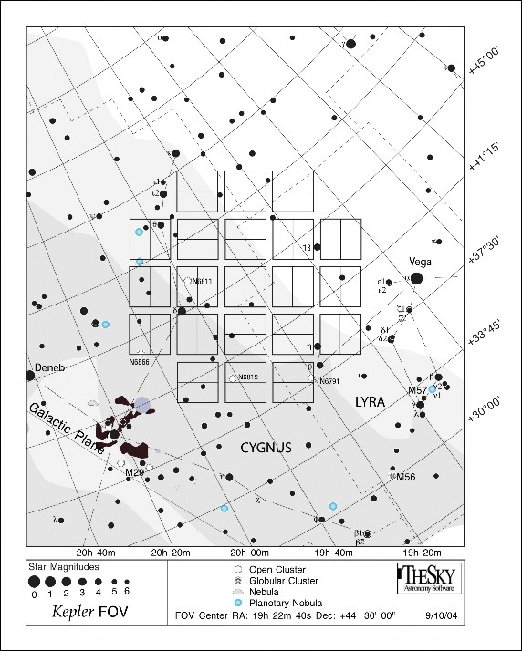
Figure 1: Kepler FOV. Squares show outlines of individual CCD modules projected on the sky. Kepler will stare at this same patch of sky for the duration of the mission, except when downlinking data through the HGA every 31 days
The boresight RA is 19h 22m 40s and the DEC is +44d 30m 00s. The ecliptic longitude of the FOV center is 307o, and ecliptic latitude is 65o. The high ecliptic latitude permits continuous viewing with the sunshade shown in Figure 3. The galactic longitude LII= 76.3o and the galactic latitude is BII= 13.5o. The
galactic latitude is low enough to have lots of stars, but not so low that many giants at great distances in the galactic plane are in the FOV.
Categories of Observing Programs
There are three main components of the Kepler observing program: planetary transit search, characterization of transiting systems, and Guest Observers.
Planetary Transit Search
The transit search program has the job of measuring the flux time series of >100,000 stars to identify Threshold Crossing Events (TCEs), which are candidates for planetary transits. The method used is precision photometry, which detects small (of order 100 ppm) decreases in flux from a star as its planet passes in front of it. The photometry requires a precision of 20 ppm or better for a 12th magnitude G2V star, over a transit time scale of 6.5 hr. Kepler must observe the same star field nearly continuously for at least 3.5 yr to see Earthlike planets around stars like the Sun complete 3 orbits.
Characterization of Transiting Systems
TCEs cannot be confirmed as transits, and transits cannot be interpreted, without a thorough characterization of the candidate system and its neighborhood on the sky. The characterization program thus includes:
Precise centroiding, from the same data used to derive the photometry, to show that the event was due to the target rather than some unresolved background object.
High spatial resolution imaging from ground-based telescopes and HST, to resolve background objects that may be causing the event.
Precise stellar radii, derived from subsequent SC observations of selected target stars, which are fit to asteroseismological models. The star diameter must be known accurately in order to determine the planet’s diameter, since a transit measures only the ratio of diameters.
Measurement of stellar variability, using Kepler and ground-based data. Stellar variability must be precisely measured to assess the contamination of the transit signal, and possibly reject the target for further observations, to free up resources for more promising stars.
Precise transit timing, using Kepler data on many transits for the same target, to detect the gravitational influence of non-transiting planets.
Guest Observers
In addition to those stars being monitored to detect planets, targets in the Kepler FOV were selected for guest observers based on peer-reviewed proposals. For detailed information, please visit the Kepler Guest Observer Web Site (http://keplerscience.arc.nasa.gov ).
Flight System Elements
The Flight System is composed of the Spacecraft, which provides power, communications, and attitude control; and the Photometer, Kepler’s sole scientific instrument. The Photometer is in turn composed of the Telescope and the Focal Plane Array Assembly (FPAA). The FPAA is composed of the Local Detector Electronics and the Detector Array Assembly. These elements are described briefly in this Section. The complete Flight System is shown in Figure 2.
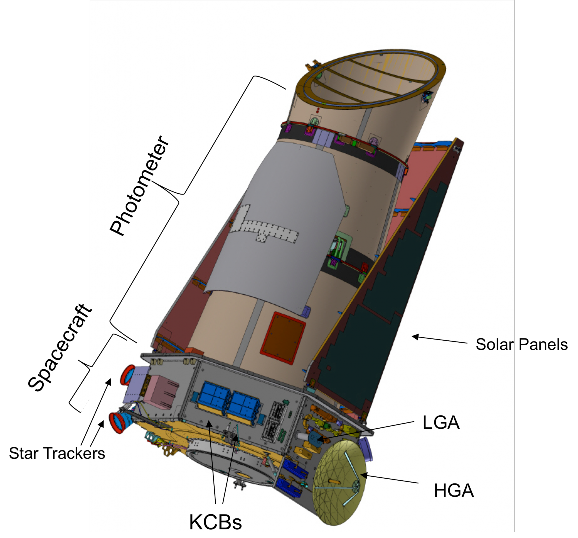
Figure 2: Kepler Flight System, showing integrated Photometer and Spacecraft. Reaction wheels are on the other side; one is visible just behind the HGA in this view.
Spacecraft
The Spacecraft is the hexagonal bus shown at the bottom of Figure 2. The conical objects on the left are the star trackers, which provide coarse attitude information; fine attitude information is provided by the Fine Guidance Sensors (FGS), which are co-located with the Science CCDs inside the Photometer. The star trackers, FGS sensors, reaction wheels, and thrusters comprise the Attitude Determination and Control System (ADCS). The blue boxes in the middle panel are the redundant Kepler Control Boxes (KCBs). The entire Kepler mission was flown on KCB2. The active KCB controls the spacecraft, issues commands to the Photometer, receives pixel data and telemetry from the Photometer, and coadds pixels in the Science Data Accumulators (SDAs). The coadded pixels of interest are stored in the Solid State Recorder (SSR), for later downlink over the High Gain Antenna (HGA). The Low Gain Antenna (LGA) allows contact for most orientations of the Spacecraft, but at much lower data rates. It is used for commanding, recovery from operational anomalies, transmitting housekeeping telemetry, and downlinking the Reference Pixels (§2.6.2.3), which monitor the health of the Photometer. On the right panel is the parabolic HGA, and on both right and left sides are the solar panels, which wrap around the telescope barrel. One of the redundant set of Subsystem Interface Boxes (SIB) provides thermal and power distribution control to all spacecraft subsystems, and collects a subset of spacecraft and photometer engineering data even when both KCBs are off.
Photometer
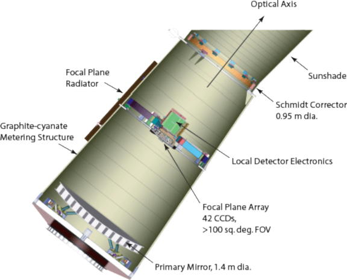
Figure 3: Kepler Photometer Architecture.
Telescope
The Kepler telescope is a wide-field Schmidt telescope composed of the Schmidt Corrector Assembly (SCA) which forms the entrance aperture to the instrument, the spherical Primary Mirror Assembly (PMA), the sunshade, Upper and Lower Telescope Housings, focus mechanisms, heaters, and thermometers.
The focus mechanisms were used during Commissioning to set the flight focus, but were not used again during the science mission. Telescope components are shown in Figure 3.
FPAA
The Focal Plane Array Assembly consists of the Detector Array Assembly (DAA), Local Detector Electronics (LDE), the radiator, the LDE Power Supply (LPS), and the “spider” which holds the Detector Array Assembly and LDE in place inside the telescope. Figure 4 shows the FPAA, with the exception of the LPS which is mounted on the S/C bus. The DAA in turn consists of 21 science CCD modules and 4 FGS CCD modules, all located on a curved Invar substrate located near the telescope image surface.
Field flattener lenses on each module map the spherical telescope image surface onto the flat CCD chips, and define the wavelength bandpass. Each science module provides photosensitive pixels in a 2200 by 2048 pixel format. The 21 modules each have 4 output channels, for a total of 84 channels and 94.6 million active pixels that view the sky, with additional masked real and virtual pixels for collateral data.
The LDE internally generates all the CCD clocks and bias voltages, video signal processing, and analog to digital conversion, as described in detail in §5. Within the LDE, five electronic component assemblies (ECA) connect to the CCD flex circuit cable interface and to the motherboard. Each ECA is composed of a Driver and an Acquisition Printed Wiring Assembly (PWA, colloquially called “boards”), and is labeled according to its drawing number from 500 to 504, or (in other documents) in sequential order from one side of the LDE to the other (ECA-1 to 5). For example ECA-503 and ECA-4 refer to the same board pair.
The FPAA interfaces external to the Photometer optical cavity are limited to the LDE power supply (LPS) and the avionics electronics thermal control, data, command and telemetry components. To accommodate the Schmidt telescope design, graphite composite structures suspend the FPAA at the telescope focal surface.
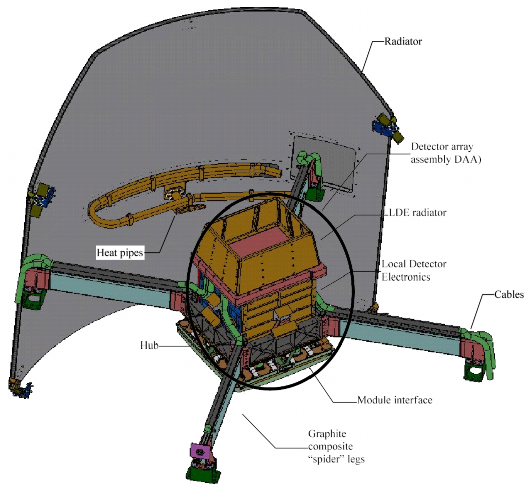
Figure 4: Focal Plane Array Assembly, showing spider mount to telescope and radiator.
Engineering Telemetry
The flight system collects about 10,000 engineering telemetry items including temperatures, voltages, currents, motor and mechanism positions, reaction wheel speeds, attitude, thruster events, and software states. Of these, 198 were selected as ancillary engineering data (AED) early in the mission for removing systematic errors from the photometric data and validating cadence data, of which 116 were thought to be possibly the most useful given their physical location, update rate, signal-to-noise, and quantization (KAM, Appendix B5). Items with mnemonics beginning with PED are “Photometer Engineering Data,” which are collected only when one of the KCBs is powered on, and correspond to physically distinct but
thermally similar sensors depending on which KCB is in use. Several telemetry items not included in AED turned out to have a detectable effect on pixel time series or photometry, such as the reaction wheel housing temperatures and the flux of variable FGS guide stars (KDCH). While systematic error correction in pipeline 8.0+ actually uses the ensemble of light curves themselves (rather than the AED) to represent and remove systematic errors, the AED are archived at MAST to allow alternative approaches to analyzing Kepler data. The larger attitude errors and thermal variation and the smaller number of targets in K2 may also motivate users to revisit the use of AED for correcting light curves.
Pixels of Interest
Targets and Apertures
Target definition tables are used to specify the origin pixel of a target area and the desired Photometric Aperture. The target origin pixel is identified by 4 numbers: module, output, row and column (MORC). For example, Figure 5 shows a target with the origin pixel at row 16, column 9, which uses Photometric Aperture pattern # 2. Photometric Aperture Definition Tables are used to specify the Pixels of Interest (POI) for a target. The Aperture Definition Tables specify the POIs as row and column offsets from the origin pixel. In Figure 5, a 3x3 box is specified. The origin pixel does not have to be the center of the Photometric Aperture, nor do the aperture pixels need to be contiguous.
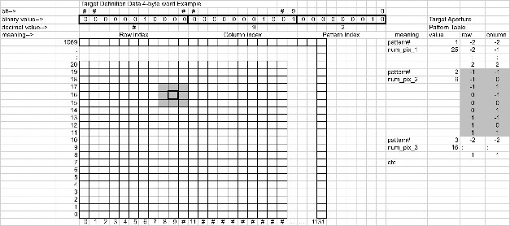
Figure 5: Targets and Apertures, redrawn after BATC document 2216784. Gray indicates the pixels of interest for the origin pixel shown by the Target Definition 4-byte word and Pattern index
2. The bold black pixel is the origin pixel for this target.
Kinds of Targets
There are separate Target Definition Tables for Photometric Targets (Long Cadence and Short Cadence), Reference Pixels, and Background Targets. Two sets of the Target Definition Tables are stored onboard at any given time for pre and post roll observing. One Photometric Aperture Definition Table is used for the Photometric and Reference Targets and another is used for the Background Targets.
Kepler does not physically window regions of interest in the CCDs. Instead, all pixels are read out for each frame, and coadded in the SDAs. Target and Aperture definitions determine which of those SDA coadded pixels are read out of the SDAs, compressed, transmitted to the SSR, and downlinked.
Both physical and virtual pixels (see §4.5) may be POI.
Long Cadence
LC apertures do not need to be rectangular, or even contiguous. While LC apertures can in principle contain 32767 pixels each, such large apertures are used only for ground test and not for flight. In flight,
the aperture must be one of the 1024 different aperture definitions in total for LC and Reference Pixel targets. There are 5.44 Mpix available in total for LC targets, most of which will be allocated to the planetary transit search. The maximum number of LC targets is 170,000. These data are compressed, stored, and downlinked every month.
In addition to targets of intrinsic scientific interest, each channel has a set of Artifact Removal Pixels (ARPs), which have the same row and column co-ordinates in each channel, and are described in §6.8.
Short Cadence
A Short Cadence (SC) contains at least 7 integrations, and a LC contains at least 15 SCs. The default values used throughout science operations are 9 integrations per SC, and 30 SCs per LC. The SC pixels are also coadded in the SDAs for 29.4 min, or 270 integrations. The difference between SC and LC is that the SDA SC coadds are read once every SC period, nominally 58.85 s, and the running sums differenced in software to give the same values as if the SDA was reset every SC period. Thus, SC data collection does not require the hardware to do anything different than what it does in LC data collection, and all SC targets are necessarily LC targets as well. SC apertures follow the same rules as LC apertures, though there are fewer of them. There are 43,520 pixels available in total for SC targets, distributed among 512 targets for an average target aperture size of 85 pixels. Most of the SC data will be allocated to the transit system characterization and asteroseismology programs. These data are compressed, stored, and downlinked every month.
Reference
Reference pixels are meant to provide insight into the health of Kepler at more frequent intervals than the monthly downlink of Photometric Target data. The method of specifying Reference pixels is identical to that of specifying science targets. A separate Target Definition Table is dedicated for Reference pixels.
However, Reference pixel targets use the same aperture definitions as science targets, so no separate aperture definition table exists for reference pixels. There are about 96,000 pixels available for Reference targets at the start of the mission. The number of pixels available decreased considerably during the course of the mission, as the LGA downlink bandwidth decreased by a factor of 30 between the start of the mission and 3.5 years after launch, due to the increasing range to Earth. These data are not compressed, and are downlinked every 4 days.
Background
Background Pixels (BG) are used to remove zodiacal light and unresolved background stars from the data, and to correct out residual 2-dimensional instrumental artifacts in the image (§5), which remain after the use of the Collateral data for 1-dimensional correction along rows and columns separately. They are collected each time a Long Cadence is collected, but have their own target and aperture definition tables. Each channel may have up to 1125 Background targets. There are 378 kpix available in total for Background targets, presently allocated as 1125 targets per channel, 4 pixels per target. A typical example of their distribution is shown in Figure 6. These data are compressed, stored, and downlinked monthly.
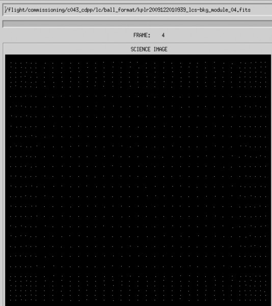
Figure 6: Typical Distribution of Background Pixels. The lattice is not quite regular, since the targets are placed to avoid stars, and it is desirable to sample more closely around the edges to better define the boundary conditions for the two-dimensional polynomial fit to the background.
Collateral Data
The Collateral Data are data from summed rows and columns of pixels at the edges of the CCD output channel image (§4.5). They are used for one-dimensional dynamic correction (in the Data Processing Pipeline) of the LC and SC data. The binned pixels are subsets of the Masked Smear, Virtual Smear and Trailing Black regions, the size and location of which are shown in §4.5 and Figure 25.
Long Cadence
Long Cadence Collateral (LCC) data consist of:
Each column for a binned subset of rows in the Masked Smear region,
Each column for a binned subset of rows in the Virtual Smear region,
Each row for a binned subset of columns in the Trailing Black regions,
for each module/output regardless of target distribution.
Short Cadence
Short Cadence Collateral (SCC) data are only those binned rows and columns needed to correct the SC pixels collected. Figure 7 shows the 5 types of SCC data:
Short Cadence Target Black
Short Cadence Target Masked Pixels
Short Cadence Target Smear Pixels
Short Cadence black/masked overlap Pixels
Short Cadence black/smear overlap Pixels
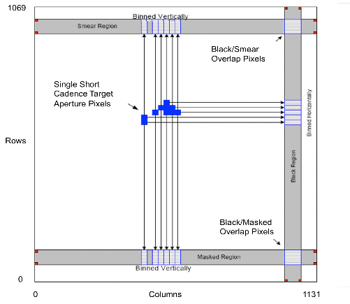
Figure 7: Short Cadence Collateral data. See §4.5 for a more detailed exposition of image format.
It is important to note that the flight system calculates the union of rows and columns required by a SC target, then reads them out in row or column numerical order, regardless of the order in which they were listed in the target aperture definition table. This calculation is unique to SCC data. A miscommunication about this ordering led to the scrambled SCC smear problem and its solution described in KSCI-19080 (Caldwell and Van Cleve, 2016).
Reference
If the equivalent of collateral data for Reference pixels is needed, those pixels must be explicitly allocated from the available pool of Reference pixels. Collateral Data are not collected and accounted for separately as is the case for LC and SC.
Full Field Images
All of the pixels, real and virtual, in the Kepler focal plane are collected in a Full Field Image (FFI). These pixels may be coadded. FFIs will be collected for calibration and diagnostic purposes, but because of the large data volume of each FFI (400 MB) it is unlikely that they will be used for regular science investigations, as 42 FFIs – representing less than a day of data collection – would fill the SSR. FFIs will be collected before and after each quarterly roll to verify star location and detector properties, and to characterize image Artifacts (§6).
Example Full Field Images
Figure 8 and Figure 9 show a synthetic image of a single output channel produced by the End to End Model (ETEM) to illustrate the focal plane and electronics features discussed in Sections 4 and 5. Note the density of stars; apertures rarely contain only the target star, with nothing else visible above the noise floor.
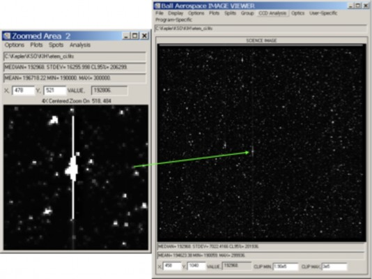
Figure 8: Right: Example End-to-End Model (ETEM) image of a single output Channel for 270 coadded 6.02 s integrations, 1132x1070 pixels. The images are scaled linearly over the range shown to show the star density. The upper end of the scale (white) are 14th magnitude and brighter. The horizontal line at the top of the image is due to Charge Injection. Left: Zoomed image of a saturated star showing charge bleeding (See §4.10).
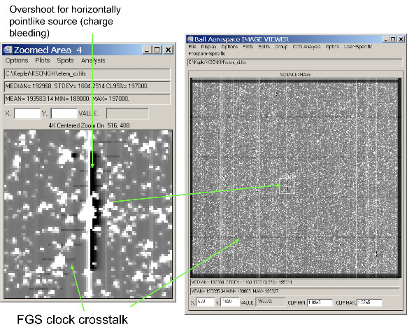
Figure 9: Same images as Figure 8, but scaled linearly over a much smaller range of DN to bring out virtual pixels and low-level image artifacts (§6). Right: virtual pixels, on the border of the image, are scaled to black in this image. Left: The vertical black band, to the right of full scale pixels from saturated source charge bleeding, is the manifestation of undershoot (§6.6) for bright point sources.
Ground Test Data Relevant to Flight Calibration
Ground-based tests supply calibration and performance data which are not available on-orbit, either because of the lack of a shutter, the presence of cosmic rays, the lack of a uniform illumination calibration source, or the cost in science data not taken. Table 2 shows the most important of these tests. Each test has an alphanumeric BATC test ID used to unambiguously identify the test, since test descriptions and labels can vary over time as the test concept is developed.
Table 2: Ground Tests Supplying Calibration and Characterization Data for Use on Science Data
| BATC | BATC |
|
Test Description | Test ID | report name | Short Label | Quantities Measured |
Detector Array Assembly Performance and Characterization |
PH0002 |
KEPLER.SER.FPA.020A |
DAA Test | gain, linearity, INL/DNL, PRNU, video crosstalk, dead/hot pixels, dependence of performance on LDE temperature |
Photometer TVAC Alignment & PSF Performance Test |
PH0051 |
KEPLER.SER.I_T.029A |
Photometer Test | optical model validation, pre-launch best focus, through-focus PSF |
Flight System Thermal Vacuum Test |
FS0019 |
KEPLER.SER.I_T.040A |
TVAC | Long series of dark FFIs and LCs at temperatures spanning the operational range, for moiré and thermally-varying FGS crosstalk characterization |
Optics and Images
Telescope Design Summary
Kepler is a wide FOV Schmidt telescope with a circular entrance aperture of 950 mm diameter, a 1.4 m diameter primary mirror, and a 16.1° diameter field of view – a sky area equivalent to 5 Palomar Schmidt plates. The photometer wavelength range is 420-900 nm, as shown in detail in §3.3. The resulting f/# for the system is 1.473 on-axis with an effective focal length of 1399.20 mm. The telescope illuminates forty- two 1044 x 2200 science CCDs and four 512 x 512 FGS CCDs made up of 27µm pixels and 13µm pixels respectively. These flat CCDs are matched to the curved focal surface using field flattener lenses (FFLs) and the mechanical arrangement discussed in §4.2. The rotation, translation, and defocus of each as- built CCD with respect to the design value is given in KEPLER.SER.FPA.021. There are 3 focusing mechanisms attached to the primary mirror.
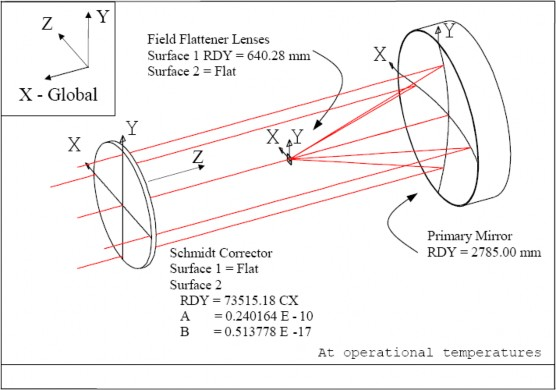
Figure 10: Kepler Optics nominal design, from KEPLER.DFM.PHT.003E. RDY is the radius of curvature of the spherical component of each optic. A and B are the quadratic and quartic components of the Schmidt figure.
Table 3: Predicted Optical Performance, from KEPLER.DFM.PHT.003E.
Parameter | Predicted Performance |
Entrance Aperture Diameter | 950 mm |
IFOV (Plate Scale) | 3.98 arcsec/pixel |
F/# | 1.473 |
Performance Field of View Diameter | 16.1° |
Parameter | Predicted Performance |
0% vignetting diameter Vignetting at 13.88° diameter | 9.06° 11% |
Total Stray Light Signal | 140 e-/pix/s |
PSF Maximum 95% encircled energy diameter including tolerances (Telescope Only) |
146.7 µm |
PSF (Photometer Performance including CCDs) 95% encircled energy diameter Maximum energy in center pixel See §3.5 for on-orbit performance. |
173.7 µm = 6.4 pixels 50% |
Optical Components
Primary
(much of this section from Cameron, 2008).
The Primary Mirror (PM) was manufactured by the Brashear Corporation. The Ultra-Low Expansion (ULE) blank, which is 86% light weighted, was produced by Corning. Brashear measured several parameters of the PM before shipping the substrate to the coating vendor. The following are a selected few of the measurements. The measured radius of curvature at room temperature = 2784.83 mm with an uncertainty of ± 0.05 mm, within tolerance of the required room temperature radius = 2784.99 mm concave ± 0.7 mm. Total surface error over the 1.4 m Clear Aperture requirement is .075 wave rms at
632.8 nm. Measured surface error is 0.0585 wave rms over the Clear Aperture at room temperature. The specification for surface roughness was 2 nm rms, and the surface measured 0.94 nm average and
1.15 nm maximum.
The mirror coating is an enhanced silver coating applied by Surface Optics Corporation. The PM radius of curvature was not measured after the mirror coating was applied.
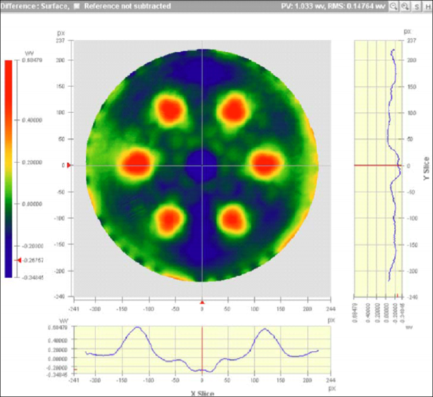
Figure 11: Figure of Kepler Primary Mirror with Respect to a Sphere. Note 6-fold deformation due to mounting pads.
Any single star will only use a fraction of the PM surface area. The area fraction is about (0.95/1.4)2 =
0.46 or 46 %. The wavefront error is exactly twice the surface figure error, because of the reflection. The spectral properties of the coated PM are shown in Figure 13.
Schmidt Corrector
(from Cameron, 2008)
The Schmidt Corrector (SCo) was manufactured by Tinsley Laboratories from a fused quartz blank produced by Corning. The SCo was antireflection coated by Surface Optics. Table 4 shows the SCo parameters. A good discussion of Schmidt correctors is given in Schroeder, 1987.
Table 4: Parameters of Kepler Schmidt Corrector.
Parameter | Design | Tolerance | Measured |
Base Radius (mm) | -73519.44 | ± 2000 | -73623.82 |
Aspheric Coef. A | 2.40E-11 | ± 0.18% | 2.40E-11 |
Parameter | Design | Tolerance | Measured |
Aspheric Coef. B | 5.14E-18 | ± 2.25% | 5.14E-18 |
RMS1 (Å) | zero | 20 | 6.24 |
RMS2 (Å) | zero | 20 | 7.28 |
Wedge TIR @ CA (mm) | zero | 0.051 | 0.023 |
Plano (λ = .6328 µm) | flat | 0.2 λ rms | (indirectly measured) |
Asphere Centration (mm) | zero | ± 0.05 | 0.05 |
Transmitted WFE (rms λ) | zero, single-pass | 0.1 | 0.056 |
The spectral properties of the SCo are shown in Figure 13.
Field Flattener Lenses
The following discussion is taken from Cameron (2008):
The Field Flattener Lenses (FFL) are the highest quality grade sapphire available with no inclusions or micro- bubbles, free of light scatter and lattice distortion, with C-axis orthogonal to the optical face. The FFL convex radius is specified as R = 640.56/640.28 mm warm/operational 293/178 K and the center thickness is 3.500 +/-
0.025 mm. The optical surfaces are better than 20 Angstroms rms.
Thickness variations between the 21 sapphire FFL’s will produce module-to-module defocus, which is small compared to the 300 micron total defocus budget. Fortunately, the fabricated FFL’s are all well within the thickness tolerance.
The mechanical drawing of the FFL is shown in Figure 12. The front surface is antireflection coated and the back surface has a bandpass filter (BPF) coating. The bandpass was chosen to minimize the stellar variability in the UV, especially the Ca II H and K lines, and minimize fringing in the IR. The spectral properties of the FFL, including the BPF, are shown in Figure 13.
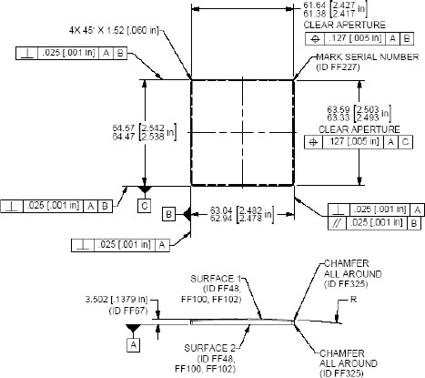
Figure 12: Field Flattener Lens mechanical drawing, from Ball document 570659. Units in mm, with inches shown in brackets [].
Photometer Spectral Response
The Photometer Spectral Response is composed of the transmission of the SCA, PMA, the field flattener lens on each CCD module (which has a bandpass filter coating), and the quantum efficiency of the CCD. This spectral response, and the color of the target, together define the observed “Kepler magnitude” of the target. The spectral response of each element of the Photometer is shown in Figure 13, and the combined transmission, including CCD quantum efficiency for channel 11.2, is shown in Table 5. The wavelength cutoffs are critical for Kepler’s transit detection science, as they exclude time-variable spectral lines commonly found in the spectra of solar-like stars. The spectral response for each channel is given in the spectral response model delivered to MAST (KAM §2.3.5.19).
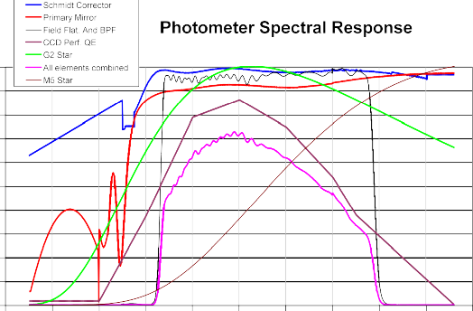

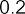
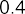
Figure 13: Photometer Spectral Response, from Bachtell & Peters (2008), for channel 11.2.
Table 5: Total Spectral Response of Kepler, including CCD response for channel 11.2. The column labeled ‘Absolute’ is to be multiplied by the obscuration and vignetting factors (§3.6) at the target location to obtain the effective area of Kepler at that wavelength. The column labeled ‘Relative’ is normalized to 1.00 at the wavelength of maximum spectral response, 575 nm. Results for all channels sampled every 1 nm are given by the spectral response model delivered to MAST.
| Spectral | Response |
lambda |
|
|
(nm) | Absolute | Relative |
350 | 1.58E-04 | 2.22E-04 |
375 | 1.00E-03 | 1.40E-03 |
400 | 3.95E-04 | 5.53E-04 |
425 | 5.63E-02 | 7.88E-02 |
450 | 4.65E-01 | 6.50E-01 |
475 | 5.36E-01 | 7.50E-01 |
500 | 6.24E-01 | 8.73E-01 |
525 | 6.63E-01 | 9.28E-01 |
550 | 6.81E-01 | 9.53E-01 |
575 | 7.15E-01 | 1.00E+00 |
600 | 7.13E-01 | 9.99E-01 |
625 | 6.96E-01 | 9.75E-01 |
650 | 6.70E-01 | 9.38E-01 |
675 | 6.49E-01 | 9.08E-01 |
700 | 6.16E-01 | 8.62E-01 |
Spectral Response
lambda
(nm) Absolute Relative
725 | 5.74E-01 | 8.03E-01 |
750 | 5.41E-01 | 7.57E-01 |
775 | 4.90E-01 | 6.86E-01 |
800 | 4.68E-01 | 6.55E-01 |
825 | 4.00E-01 | 5.60E-01 |
850 | 3.32E-01 | 4.65E-01 |
875 | 2.79E-01 | 3.90E-01 |
900 | 2.03E-02 | 2.84E-02 |
925 | 3.75E-04 | 5.24E-04 |
950 | 1.48E-04 | 2.07E-04 |
Aberrations
The spherical aberration of the primary mirror is compensated by the Schmidt corrector. The corrector breaks the symmetry of the telescope, but the off-axis aberrations are relatively small compared to the spherical aberration of the primary mirror without the Schmidt, because the corrector is a plane-parallel plate and thin compared to the radius of curvature of the primary (Schroeder, 1987). Since the Schmidt corrector has an index of refraction which varies with wavelength, 9-plus waves peak-to-valley (Cameron, 2008) of chromatic aberration are introduced into the telescope PSF, which is the limiting aberration for image quality. See Figure 14 for an example.

Figure 14: Theoretical example of Chromatic Aberration in Kepler PSF, channel 24.3. The three images are, from left to right, 430 nm, 630 nm, and 830 nm monochromatic PSFs. The images are histogram-equalization scaled, and each of the 3 subsampled images is displayed on an area of 11x11 pixels.
Pixel Response Function
The system Pixel Response Function (PRF) is the image property of most interest to the Kepler data analysis, as it describes the observed appearance of point sources. The PRF is a combination of the optical PSF, the jitter PSD, the module defocus, the CCD response function, and the electronic impulse response. It is a function of the source MORC location (§4.3), and the intrapixel location of the source centroid. In principle, the PRF will also be a function of stellar spectra type, since there is chromatic aberration in the Schmidt and wavelength dependence in the system optical throughput and CCD properties. However, the broadband emission from stars of any color washes out most of the fine structure calculated from the Code V model of the Kepler optics using monochromatic light at different wavelengths (Figure 14). The PRFs discussed in this Section are the measured PRFs, which means that each is the average of several stars in the Kepler bandpass. While the Code V model shows that there are real differences between the different stellar colors in detail, these differences are not enough to threaten target management, and they were not part of observation planning or data analysis.
Since Kepler is a photometer, not an imager, the most compact PSF is not necessarily the best. The Kepler PSF shows significant fine structure, and concentrating too much light in the brightest pixel can actually degrade the photometry by increasing sensitivity to image motion, and degrade DIA (Differential Image Analysis) by degrading centroid accuracy. On the other hand, the SNR is decreased by making the PRF too broad, since a sum over more zodiacal light, background stars (and their noise), and pixels (with their read noise) will be needed to capture the flux. This noise increase is significant since, on average, each pixel has the equivalent of one 19th magnitude star, in addition to the zodiacal light. So both brightest pixel flux fraction (BPFF) and 95% encircled energy diameter (EE95) are used to bound the acceptable PRF, which is evaluated for the spectrum of a G2V star. The BPFF should be <60% (Gilliland, 2004), while EE95 is required to be < 7.0 pixels.
The Kepler telescope was focus adjusted during Commissioning, by 40 µm in piston and a smaller amount in tilt, to minimize the RMS offset from best focus. A set of bright, nonsaturating, relatively isolated stars were defined as Short Cadence targets, which will be referred to as the “EE Targets” since EE is the performance requirement which BATC was verifying with these observations. The resulting image set substantially exceeds the encircled energy requirement. In addition, focusing resulted in a more symmetric variation of PRF across the focal plane, which reduces discontinuities in photometric aperture properties between quarterly rolls for a given target.
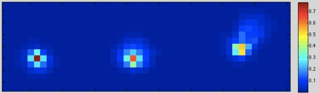
Figure 15: Example square-root scaled pixel-centered Pixel Response Functions calculated by the PRF model based on Commissioning data. The color bar indicates the square-root scaled value. PRFs are calculated near the center of the channel at row 535.0, column 550.0. Unscaled images are normalized to give a flux of unity integrated over the PRF. Left: Channel 9.2, smallest EE95; Middle: Channel 13.2, median EE95; Right: Channel 10.4, largest EE95. Images are in channel coordinate system, with the + ordinate increasing rows, and the + abscissa increasing columns.
Subsequent to focusing, the PRF was measured, using a much larger set of stars, by again moving the telescope in sub-pixel intervals. The representation of the PRF derived from the full data set, and delivered to the SOC and MAST, was used to compute pixel-centered PRFs at row 535.0 and column
550.0 as shown in Figure 15. Images from the EE activity, selected to have the centroid closest to a pixel
center are shown in the Y’ Z’ FPA coordinate system in Figure 16. The EE95 derived from the delivered PRF are shown in Figure 17. These images and 95% EE diameters are meant to give the observer a qualitative idea of how the PRF varies across the focal plane; for precise target aperture definition and photometric time series analysis, users should download the PRF model from MAST (KAM §2.3.5.17).
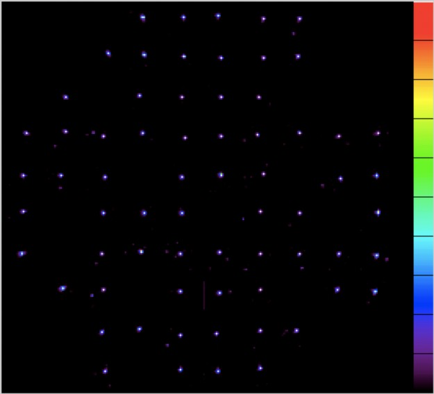
Figure 16: Pixel-centered images across the FPA after adjusting the focus by 40 µ m during Commissioning. Each EE Target is normalized to the brightest pixel in the target aperture, rotated and translated to the common FPA co-ordinate system, and linearly scaled to the color bar to the right. Black lines on color bar represent 10% intervals. Some channels did not have targets, or the targets were deemed unsatisfactory. The EE targets are magnified by 50x compared to the spacing between them in this image. Relatively dim stars near targets and smear correction artifacts are also visible.
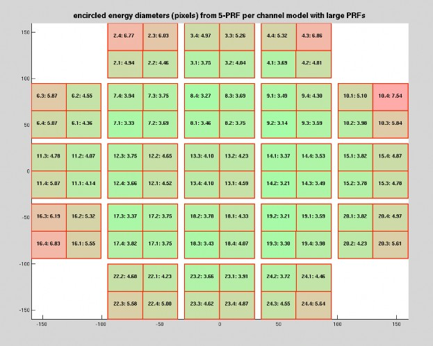
Figure 17: Observed 95% EE diameter after focusing the Kepler telescope (see Bryson et al. 2011 for discussion), arranged in the FPA co-ordinate system. Each box is labeled by channel, followed by the 95% EE diameter in pixels. Green indicates a 95% EE diameter well within the 7.0 pixel requirement, shading to red in those few cases where the requirement is approached or slightly exceeded. The white corners indicate FGS channels.
A preliminary analysis of the percent flux in the center pixel of the pixel-centered images shown in Figure 16, grouped by module like the EE results shown in Figure 17, gives results from 20% to 62%, with a median value of 45%. It therefore appears that the focusing activity made the EE diameters smaller, without an excessive concentration of light in the brightest pixels. Table 14 shows 95% EE and central pixel brightness results for all channels.
Obscuration and Vignetting
The effective area of a telescope at a given wavelength is
Aeff (λ) = (1− aobs − fvig (Y ',Z'))S(λ)πD2 / 4 Eq.3.6-1 where D is the diameter of the entrance aperture (0.950 m), aobs is the on-axis areal obscuration (0.227),
fvig is the vignetting, and S(λ) the spectral response function from §3.3. Since the FOV is so large, not all pixels in the field can see the entire entrance pupil, and fvig is a function of FPA coordinates Y’ and Z’.
The definition of vignetting in Eq. 3.6-1 is that used by BATC, though a more standard definition the reader may be familiar with is
eff obs vig
A (λ) = (1− a )(1− f (Y ',Z'))S(λ)πD2 / 4 Eq.3.6-2
The definition used in Eq.3.6-1 will be used throughout this work.
The vignetting is negligible within 4.6 degrees of the center, and increases to 11% at the edge of the FOV at 6.94 degrees off-axis. The area of sky which is vignetted < 11% is then 151.2 square degrees, and the sky area imaged onto active pixels with < 11% vignetting is 101 square degrees since there are gaps between modules, a gap between the two CCDs on each module, and inactive areas on each CCD (See Figure 20 and Figure 24). The vignetting is discussed in detail in KEPLER.DFM.TEL.029B.
Table 6: Geometric Vignetting, as defined by Eq.3.6-1. Azimuthal variations are negligible. This table is a fit to the results shown in Table 3 of KEPLER.DFM.TEL.029B.
Radial Angle
(deg) fvig in %
0.0 | 0.0 |
0.5 | 0.1 |
1.0 | 0.2 |
1.5 | 0.2 |
2.0 | 0.3 |
2.5 | 0.3 |
3.0 | 0.5 |
3.5 | 0.5 |
4.0 | 0.9 |
4.5 | 0.9 |
5.0 | 1.2 |
5.5 | 2.8 |
6.0 | 5.8 |
6.5 | 7.6 |
7.0 | 10.4 |
Pointing Requirements and Performance
Pointing error is the movement of the telescope Line of Sight (LOS) over time. The square of the Fourier transform of the pointing time series gives the pointing error Power Spectral Density (PSD), and the square root of the integral of the PSD for all frequencies < νLOS is referred to as the RSS forward sum at νLOS. It is convenient to discuss the PSD and RSS forward sum at frequencies greater than that of one LC (2 hr-1) as jitter, which is temporally unresolved in the returned LC science data. The RSS forward sum for νLOS < 2 hr-1 is called drift, which may be corrected to some extent in the data analysis software. Jitter is convolved with the optical PSF to estimate the LC-averaged PSF incident on the focal plane.
Figure 18 shows the spacecraft reported attitude error from Q5. The motion of a science target in the Kepler focal plane also includes DVA (§3.9), thermally-induced focus changes (DCH §5.2), and systematic ADCS errors from variable guide stars (DCH §4.5).
The actual performance of the ADCS (Figure 18) has a 99th percentile jitter < 0.13 arcsec = 32 mpix, 3-σ single-axis. Since the jitter is RSS’d with the optical PSF, to a first approximation, the contribution to the PRF is negligible. If the jitter were constant in time, then there would be no noise contribution to the photometry. In reality, the jitter varies with the state of the reaction wheels used to maintain attitude, becoming larger as a resonance between the rotational speed of a reaction wheel and the fundamental mechanical mode frequency of the Primary Mirror Assembly is approached. Therefore, precise Differential Image Analysis may need to take account of the momentum state of the Flight System at the time of the observations being analyzed.
The drift handily meets its specification of 0.009 arcsec = 2.3 mpix, 3-σ single-axis, once variable stars and eclipsing binaries were removed from the list of FGS stars (DCH §4.5).
Q5 Pointing Error
2
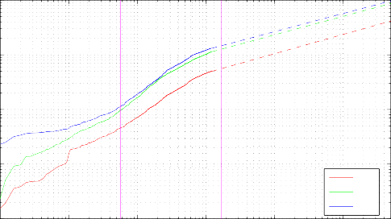
Roll Pitch Yaw
10
3−a single−axis LOS motion, milliarcsec
LC
SC
1
10
0
10
−1
10
−2
10
−4 −3 −2 −1 0
10 10 10 10 10
Hz
Figure 18: Spacecraft reported attitude error from Q5, 3σ single-axis. Cadence sampling frequencies are marked as vertical magenta lines. For each type of cadence, motion in the region to the left of the marker is referred to as “drift”, and to the right of the marker as “jitter.” Dashed lines connect the effective frequency limit of 40 s average data to the 40 s moving standard deviation of 10 Hz data.
Optical Field Angle Distortion (OFAD)
If an optical system has distortion, then a square lattice of field points is not imaged on to a square lattice at the focal surface. The edges of the reimaged square are convex for barrel distortion, and the reimaged edges are concave for pincushion distortion. To first order, a Schmidt camera is free of distortion.
However, the pincushion distortion introduced by the field flattener lens is 0.05%, corresponding to roughly 0.5 pixels in 1000 or 0.7 pixels at the corner of a module (Dunham, 2009). Since this effect is large enough to cause aperture calculations to be off by a pixel, distortion is included in the focal plane geometry model (KAM §2.3.5.16) which, along with the pointing and roll-time models (KAM §2.3.5.14 and
§2.3.5.15), converts sky to pixel coordinates (§7.6).
Differential Velocity Aberration
Velocity aberration arises as a result the angle defined by the Kepler velocity vector and the line of sight to targets in the FOV. Differential Velocity Aberration (DVA) is a result of the large Kepler FOV, as the velocity to line of sight angle varies significantly across the focal plane. As a result, the diameter of the FOV “breathes” by 6 arcsec on an annual basis, with a sine dependence on ecliptic latitude. So even while the FGS sensors are holding the attitude constant, the relative positions of targets will move around as Kepler orbits the Sun, and must be corrected. In comparison, the 3σ single-axis pointing stability (drift) is 2.3 mpix, or about 100x less than this. Low frequency noise is introduced into the photometric time series by image drift within the target aperture, which since it is differential, cannot be corrected by the ADCS. However, since DVA changes on a time scale greater than that of a transit, these trends can be removed by data analysis software.
Ghost Images and Scattered Light
A ghost image results from multiple reflections off optical surfaces, and is reimaged (though possibly out of focus) on the CCD. Ghosts can be a considerable distance away from their source image in the focal
plane, depending on the reflecting surface and its geometry. Scattered light, on the other hand, results from the deviation of optical surfaces from perfect specularity, as described by the bidirectional reflection factor (BRF). The part of the BRF near specularity causes near-axis scattered light, which may be considered a perturbation to the PRF, while the part of the BRF far from specularity causes a diffuse glow across the focal plane, which contributes to shot noise. Scattered light can also occur when light strikes a faceted surface. The following sources of ghosts and scattered light may be found in Kepler data:
The Schmidt Corrector Ghost has a FWHM comparable to that of the PSF, and is located opposite the source image, with respect to the optical axis of the telescope. Since the ghost is separated from the source and has a relative flux as high as 3x10-4, it can be responsible for false positives, if there is a time- varying source at the opposite field point. The opposite field point must then be examined for bright, time- varying objects such as eclipsing binary stars. Though detectable, it is less important by an order of magnitude than the video crosstalk within a module (§6.2.2).
Scattered light from bright stars is produced by the edge of the aluminum module mask (§4.2). This kind of ghost is only detectable near mask edges.
Scattered light from bright stars is produced near the gap between the two CCD chips which comprise a science module. This is predicted to be insignificant.
Ghosts from very bright stars, in which light bounces off the CCD, reflects off the field-flattener, and returns to the CCD forming a large out-of-focus image of the pupil. See the rightmost panel of Figure 38 for an example.
Diffuse scattered light. This was required to be negligible compared to the natural background, and shown to be so by modeling and measurement.
Stray light was measured during Photometer testing and the first year of flight (Caldwell et al., 2010). No stray light in excess of that modeled was found.
Detector Properties
CCD Architecture
The CCDs are full frame, thinned, back illuminated, anti-reflection coated, 4-phase, dual output, 2200x1044 pixel line-transfer devices. A readout amplifier is located on both ends of the serial register and during normal operation one half of each science CCD is read out by a single output, as shown in Figure 19. The 20 rows closest to the serial register are masked with an opaque light shield (the “Masked Rows” in Figure 25), so the photosensitive area of the science CCD is only 2200 columns by 1024 rows. Pixels are clocked one row at a time along the parallel registers into the serial register (bottom of Figure 19), then one pixel at a time out of the serial register and through the output amplifiers.
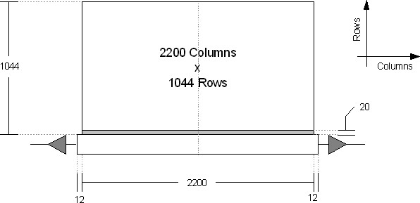
Figure 19: Block diagram of a single CCD chip, showing the physical pixel format and the two output amplifiers.
Physical Characteristics
Each Science CCD module, an example of which is shown in Figure 20, consists of two CCD carriers with invar substrates that are aligned and attached onto an invar CCD module base assembly. To correct for the Schmidt field curvature a field flattener lens (FFL) with broadband anti-reflection coating, bandpass filtering, and FOV masking is attached to each Science module. The CCD carrier is an E2V fabricated CCD mounted on an invar substrate complete with a wirebond fan-out and two high density connectors which form the detector chip assembly (DCA). Each Science module has four independent outputs, two from each CCD, which are read out simultaneously at 3 MHz, though the readout of the entire focal plane occurs over 5 distinct time slices. The chip design includes the capability for parallel charge injection into the last row. A printed wiring assembly (PWA) provides the electrical interface between each CCD chip and the module interface connector. The module temperature is monitored by a Si cryodiode (shown in the lower panel of Figure 20) which is sensed by the LDE.
The selection of DCAs that were built into modules was based on performance criteria such as Quantum Efficiency (QE), full well, gain, and linearity, as well as metrology considerations.
Optical and mechanical metrology register the CCD active area in translation and rotation with respect to alignment pins in the module feet to support the positioning of each Science module to within 60 µm of the Schmidt focal surface. In addition, spatial knowledge of all pixels locations across the 95 million pixel field is determined to within an uncertainty of 80 µm, or about 3 pixels, prior to launch. After launch, pixel
locations with respect to the sky are known to 0.1 pixels or less as a result of the Focal Plane Geometry Commissioning activity (KAM §2.3.5.16, Tenenbaum & Jenkins 2010). Active surface height tolerances can produce a module-to-module defocus variation of up to 100 microns total.
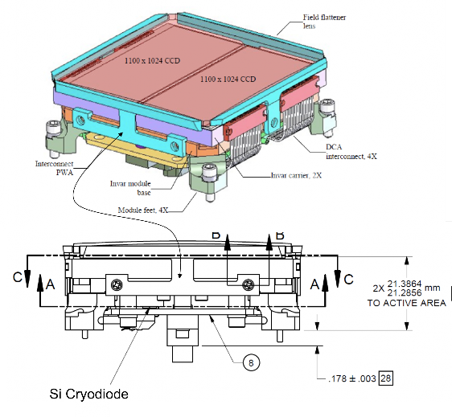
Figure 20: Physical layout of a single CCD module. Top: Isometric view from above. Bottom: Side view showing location of Si cryodiode. From Argabright (2008). Note the height tolerance above label ‘TO ACTIVE AREA’. Curved double-headed lines connect corresponding sides.

Figure 21: Physical Layout of a single CCD module. Left: Isometric view from below. Right: Side view showing interconnect wires.
The module interface provides the electrical, thermal and mechanical interface between the CCD modules and the detector electronics as well as the mechanical interface to the graphite composite support “spider" legs that suspend the FPAA over the primary mirror. The invar substrate contains 25 precision cut module planes with alignment registration features that engage pins on the CCD modules. Exhaustive processing and metrology was required throughout the fabrication of the invar substrate to maintain its CTE properties and mechanical figure. Low thermal conductivity flex circuit cables penetrate the substrate with floating connectors that engage the CCD modules. Specialized tooling was developed for module installation and module removal within the confines of particulate control and the strict ESD precautions required when handling un-shorted CCDs. Five flex cables connect between the CCD modules and the clock driver/video amplifier electronic components of the LDE.
A heat pipe from the space-staring radiator attaches to the radiator heat pipe interfaces on the heat spreader assembly. Thermal straps between the heat spreader and the flexure mounted invar substrate provide a high conductance thermal path to the CCD modules. Closed loop thermal control of the CCD modules is maintained by proportionally controlled heaters and precision temperature sensors mounted to the heat spreader, providing better than 10 mK thermal stability at the module level. Titanium flexures attach the substrate to the weight relieved titanium hub which provides a stiff mechanical interface to the graphite composite "spider" legs. See Figure 4 and Figure 22.
The orientation of the CCDs on their substrate is shown in Figure 23 and Figure 24. The orientation of the FPAA in the telescope was set to 13 degrees rotation in X in spacecraft coordinates. This rotation, along the location of the optical axis on the sky, was chosen to maximize the number of bright stars that could be placed in the gaps between the CCDs, since bright stars make precise photometry difficult or impossible for their neighbors. During the Kepler Mission the brightest star on active silicon has V = 4.58, and there are only 11 stars brighter than V = 6.0 on active silicon. Further containment of bright star effects was achieved by making the focal plane fourfold rotation symmetric, with the exception of the central module (#13). Thus, the vertical (along column) charge bleeding from bright stars afflicts the
same portion of the sky each quarter, so no additional FOV losses from charge bleeding are incurred with the quarterly rotations.
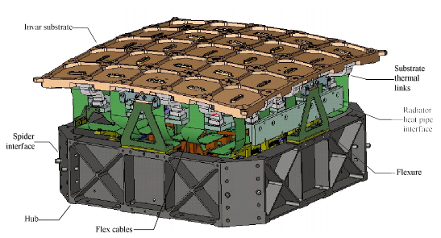
Figure 22: Module interface substrate of Kepler focal plane. 21 Science modules are laid out on the Invar substrate. The 4 FGS modules are placed in the corners of the substrate, as is better seen in Figure 24.
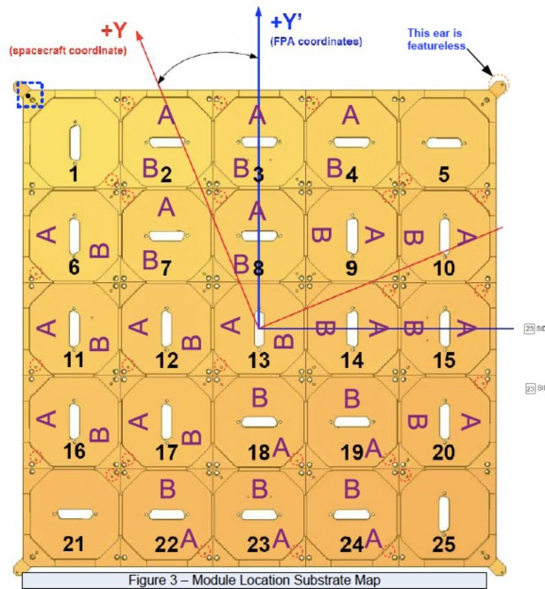
Figure 23: Substrate module map, showing physical orientation of CCD modules on the substrate shown in Figure 22, and the 13 degree rotation between spacecraft and FPA coordinates. The angle drawn is not to scale. Black numbers are module identifiers. Purple letters indicate location of each of the 2 CCD chips (A and B) per science module.
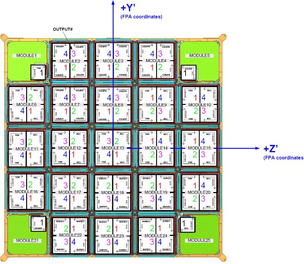
Figure 24: Focal plane layout, labeling modules and outputs (1-4), and the directions of rows and columns. Note that the focal plane is symmetric under 90 degree rotations, with the exception of the central module, module 13. Modules 1, 5, 21, and 25 are FGS modules.
CCD Performance Summary
Top level performance specifications for the Science and FGS CCDs at their nominal operating temperature are shown in Table 7.
Table 7: Kepler CCD Properties at Science Operating Temperature.
Parameter | Science Value | FGS Value |
Vendor/Model | e2v CCD90 | e2v CCD57-10 AIMO |
Well depth (e-) | >1.0x106 | >8.0x104 |
Pixel size (µm) | 27 x 27 | 13 x 13 |
Detector Array format | 21 CCD modules 2 CCDs/module | 4 FGS modules 1 CCD/module |
Parameter | Science Value | FGS Value |
| 2 outputs/CCD 1100 column x 1044 row real pixels 1100 column x 1024 row photosensitive pixels | 1 output/CCD 536 column x 528 row real pixels 512 column x 512 row photosensitive pixels |
Quantum efficiency at 600 nm | >0.80 | >0.80 |
Read noise (e- RMS per frame) | <120 e- | <15 e- |
Dark signal (e-/pixel/sec) | <1.0 | <1.0 |
CTE Serial/parallel | 0.99995 / 0.99993 | -- |
RMS linearity | <5% | -- |
Pixel Numbering
Each output of the CCD contains 1100 columns and 1044 rows of physical pixels. Of the 1044 rows, 20 are masked. To the physical pixels are added virtual overclock pixels, in which the clocks are run for a few pixel cycles before the first, or after the last, charge packet is read out. There are 32 virtual columns and 26 virtual rows, giving an image of 1132 columns and 1070 rows for each channel.
Each pixel on the FPA is uniquely identified by the following four-element vector: Pixel number = {M, O, R, C}, where each element of the vector is defined in Table 8.
Table 8: Module Output Row Column indexing of each pixels in the Kepler focal plane.
Index | Description | Science Module range (integer) |
M | Module number | 2 – 4, 6 – 20, 22 - 24 |
O | Output number | 1 – 4 |
R | CCD Row number | 0 – 1069 |
C | CCD Column | 0 -- 1131 |
Note that image rows and columns include virtual and masked pixel areas, as well as the photosensitive pixel area of the array.
Following the convention, ordered pairs of pixel co-ordinates are given as (row, column) in this document, though IDL users will be more familiar with (column, row) indexing. The combination of module and output is referred to as a “channel” or “mod.out.” Channels may be labeled in two ways, by their module and output, or by a channel number between 1 and 84, depending on the document or software application. For example, module 13, output 2 would be referred to as mod.out 13.2, channel 13.2, or channel 42. The channel number increments first by output, then by module (2.1, 2.2, 2.3, …24.3, 24.4), and is shown for convenience in Table 13.
Signal Content
Each of the 84 output channels produces an 1132x1070 image with the following physical and readout attributes. The notation is [start row: end row, start column: end column]:
[0:19, 12:1111] are masked physical pixels, used to measure dark current. The collateral data are calculated from a subset of these pixels. The definition of the subset that is actually used for the on-board calculation is [6:17, 12:1111].
[20:1043, 12:1111] are photosensitive pixels (i.e., the science FOV).
[1044:1069, 12:1111] are the parallel over scan rows, used to measure smear content. The collateral data are calculated from a subset of these pixels. The definition of the subset that is actually used for the on-board calculation is [1046:1057, 12:1111].
[0:1069, 0:11] are leading serial register elements. Because these columns are subject to an instrument artifact called “start-of-line ringing” (§6.4), these pixels are not useful for calibration, though their original intent was to determine black level.
[0:1069, 1112:1131] are trailing serial register over scan elements, used to determine “black” reference level and undershoot amplitude (§6.5.2). The collateral data are calculated from a subset of these pixels. The definition of this subset used throughout the mission is [0:1069, 1118:1131].
[1059:1062, 12:1111] are charge injection (CI) rows. Charge is injected into 4 virtual rows by dumping a fixed amount of charge (roughly 40% full-well) into the last row of pixels, for 4 parallel transfer periods. Charge Injection is always on, except in test measurements. It is used to monitor undershoot and gain, and to clean out radiation traps in the active area of the CCD.
Pixel 0, 0 is at the output tap of the channel.
These pixels are sent to the SDA for coadding. For an FFI, all the pixels in the SDA are then sent to the SSR. For LC and SC data, only the pixels of interest are sent from the SDA to the SSR.
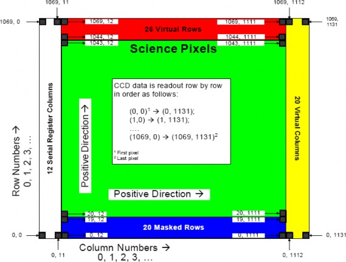
Figure 25: Signal Content Map for a single Channel. The output amplifier is in the lower left corner. Serial clocking moves pixels from right to left and Parallel clocking moves pixels down.
Black Level
The black level, sometimes called “bias” in CCDs, was chosen by design to be 5% of the 14-bit A/D range, or 820 DN/frame, to guarantee that no signals would be clipped to zero, while requiring reasonable tolerances on the components of the amplifier chain. Actual black levels, as measured by the robust mean of trailing serial register pixels, range from 640 to 751 DN over the 84 output channels. The lowest of these still assures that valid pixel values are > 500 DN per frame.
Read Noise
Read noise varies among channels between 74 e- and 150 e-, with a median of 86 e-. Approximately 7% of the FOV is compromised by six channels that violate the 120e- read noise budget, as highlighted in yellow in Table 13. For channel-by-channel values, see §7.7.
Dark Current
Dark current is a negligible component of the image in both amplitude and noise, compared to the zodiacal light. It is so low at the cold CCD operating temperature of -85o C that only an upper bound of
0.2 DN/frame ~2 e-/s can be inferred from measurements. A dark current of 100 e-/s increases the dark noise by less than 1%, compared to read noise, for integration times < 10 s. The exception is hot pixels, with anomalously high dark current. Hot pixels were detected in dark images prior to launch (after removal of large-scale structure and FGS crosstalk, §6.1) with a robust 5σ threshold above the mean bias level. Hot pixels comprise <0.1% of the focal plane.
Gain
The gain was set to 95% of the A/D range to guarantee that no signals would be clipped to zero, while requiring reasonable tolerances on the components of the amplifier chain. The as-built system gain of all 84 Science and 4 FGS channels was determined through the photon transfer measurement technique using a series of flat fields at varying exposure times. The inverse gain in e-/DN is derived from the
shot
observed signal and shot noise measured from an image difference (σ 2/2). The inverse gain
expressed in e-/DN is typically 110 e-/DN, as determined through a linear fit for observed signal levels
<6000 DN (60-80% full-well for most channels). An example of the reduced data is shown in Figure 26, where the observed signal in DN is plotted against σ2observed/2. CCD saturation effects are responsible for the radical departure from the straight line at observed signal levels >10000 DN. Some channels showed significant departures from a line for signal levels as low as 7500 DN, considerably below their well depth as defined in the next Section. It may be that flood illuminating a channel at signal levels above 7500 DN per integration produces anomalous noise in some cases, which would not be present in the sparsely illuminated science observations.
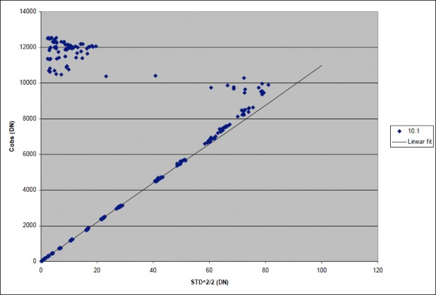
Figure 26: Channel 10.1 photon transfer gain results, showing nominal results, from Ball document KEPLER.SER.FPA.020A. Figure 27 shows linearity results on the same channel. Abscissa: square of photon shot noise in DN. Ordinate: Accumulated photocharge in DN.
The measured gain for each of the 84 channels is shown in §7.7 and delivered as an FC model to MAST (KAM §2.3.5.8).
Saturation, Linearity, and Charge Bleeding
The observed signal in a pixel increases more-or-less linearly with flux until it reaches the well depth, above which the observed signal changes more slowly with photon flux. The observed signal continues to increase, until a maximum signal is reached at a level somewhat above the well depth (Figure 27, lower right). Below the well depth, the ratio of the observed response to the small-signal linear response is the nonlinearity function, which for a linear system would be identically 1. Above the well depth, it is
observed that charge bleeds into adjacent pixels along the column containing the saturated source (Figure 8 and Figure 9). Hence, the individual pixel response over the entire range of observed values is a combination of nonlinearity and charge bleeding. These phenomena must be separated in the analysis, since only the nonlinearity is relevant to aperture photometry, as long as charge does not bleed out of the aperture. Consider a case in which the conversion factor from photons to electrons is constant for all signal levels, and for which the gain – the conversion factor from electrons to data numbers (DN) – is also constant with signal level. Then all of the structure seen in the response curve for an individual pixel is due to charge bleeding. For aperture photometry, in which the signal in all pixels in the aperture is added together, the response would be strictly linear until the charge started to bleed out of the aperture.
Applying per-pixel corrections over the full range of observed signals, and adding together all the flux in a photometric aperture, would then double-count photoelectrons.
The observed pixel nonlinearity in the Kepler focal planes is on the order of +/-3% over the range of validity of the nonlinearity function (Figure 27, upper right). Saturation occurs at about Kp = 11.5 at the standard 6.02 s exposure time, but conservation of charge is preserved beyond saturation and excellent photometry is easily recovered from targets up to 7 magnitudes beyond saturation by summing over the pixels bled into along columns (Gilliland et al. 2011).
In this Section, the term forward indicates the transfer function from e- to DN, and reverse indicates the transfer function from DN to e-. It is the reverse function, or linearization function, which is used to accurately turn DN into e-. The term differential indicates the small change in output for a small change in input around an operating point. Hence the term reverse differential photoresponse ρ (RDP) is the small change in e- calculated from a small change in DN. Fitting RDP is superior to fitting the linearization function directly, since the fit to the numerical derivative of the data is more accurate than the derivative of a fit to the data for estimating the derivative. The linearization function is then found by integration. The method and results for fitting the data are provided in detail in KADN-26196 (Van Cleve, 2016a).
Well depth is defined in Table 13 and Figure 27 as a 2.5% decrease in the forward differential photoresponse, compared to the small-signal limit. That is, a small change in photon input corresponds to 2.5% fewer DNs on a given pixel than at low signal levels.
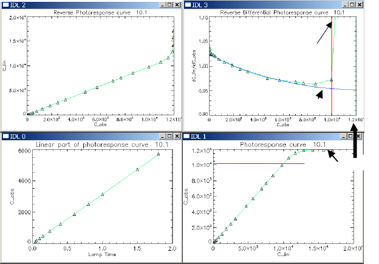
Well depth
Fit to RDP
Cobs_max
Well depth
Figure 27: Example nonlinearity results, for channel 10.1. Cobs is the observed photocharge (in DN) in a pixel, while Clin is the linearized photocharge, which is proportional to the photon count, expected on that pixel. Differential responsivity is dCobs/dClin. The maximum observable signal Cobs_max is 11971 DN, and the well depth 10093 DN. Well depth is marked as a red line. Figure 26 shows the gain results on the same channel.
A/D converter Differential Nonlinearity
An ideal Analog-to-Digital Converter (ADC) exhibits code (digital number output) transitions that are exactly 1 Least Significant Bit (LSB) apart – that is,
VLSB ≡(A/D range in V)/(2(number of A/D bits)) Eq. 4.11-1
DNL(Vin) – A/D Differential Nonlinearity -- is the ratio of the voltage between code transitions divided by VLSB, at a given noiseless input voltage Vin. If DNL is reported as a single number, it is the standard deviation of DNL(Vin). INL – Integral Nonlinearity -- refers to the deviation of each individual code from a line drawn from “negative full scale” through “positive full scale.” The deviation is measured from the middle of each particular code to the true straight line. The fine structure (a few DN) of nonlinearity is DNL, while INL is folded in with the large-scale nonlinearity discussed in §4.10.
Since the code widths corresponding to the specified DNL for the A/D converter can range between 0.6-
1.7 VLSB, a noiseless system might give 0, 1, or 2 change in DN for a voltage change of VLSB. A voltage change of 2VLSB could produce a change in DN of 2, 3, or 4 DN. Hence, the small change in flux is unknown to a factor of 2, since both VLSB and 2VLSB differential signals can give the same DN change of 2 DN. Since the magnitude of a transit of an Earth-sized planet orbiting a 12th magnitude G2V star like the Sun is about 1.0 DN per integration, this would be a problem for a noiseless system with all the flux concentrated in one pixel.
For Kepler, multiple readings of a system with random noise ~1 DN substantially reduce this problem. DNL was measured in the PH0002 Focal Plane Characterization Test, by illuminating the array with a sinusoidal pattern. Figure 28 shows an example DNL, shown here as the code histogram, divided by a 39-pixel boxcar average of the code histogram. Assuming a uniform distribution of inputs, approximately
true for the sinusoidal input, the normalized code histogram is equal to DNL. If 1% outliers are discarded, the RMS DNL is 4.6%. Large spikes, in excess of a Gaussian distribution, are due to several bits on the A/D changing at once, and their separation is a power of 2. If the DNL histogram is noise-smoothed, using a dynamic bin width equal to the calculated total noise (read noise and shot noise), the RMS is reduced to 1.4%, negligible compared to the requirements discussed in more detail in KADN-26196 (Van Cleve, 2016a), and in good agreement with what is expected if codes and code widths were uncorrelated. Hence, for most channels in the focal plane, DNL can be neglected. However, one ADC shows anomalously high DNL: output 3 on ECA-5 (channels 6.3, 11.3, 16.3).
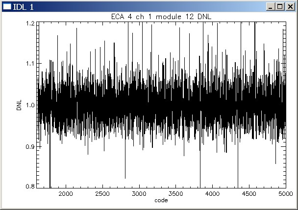
Figure 28: DNL for ECA-503 (also known as ECA-4), channel 1
Inter-Pixel Response Nonuniformity
Photoresponse non-uniformity (PRNU) is a measure of the variation in pixel-to-pixel responsivity across the photosensitive area. PRNU is used in the construction of the small-scale flat FC model (KAM
§2.3.5.12). Global PRNU, also referred to as low spatial frequency PRNU, measures the variation across the entire photosensitive area of given channel. Local PRNU, also referred to as high frequency PRNU, measures the variation across only a small localized area. PRNU specifications are defined as a percent deviation from the average pixel response at a specified average pixel signal level. Therefore, a PRNU specification of A% at a signal level of B is taken to mean that the robust standard deviation of the pixel photoresponses is A% of the average pixel signal level when the average pixel signal level is set to B by exposing the imager to a flat field.
PRNU is measured by uniformly illuminating the focal plane. Since it is difficult in practice to uniformly illuminate large focal planes such as Kepler’s, only local PRNU can be calculated to a high degree of accuracy (<5%). The mean and standard deviation of photoresponse over a small, moving sample box is calculated. Outliers at the 50% level are marked as bad pixels for the PRNU calculation, though bad pixel masking is not used in the pipeline (KAM §2.3.5.13). Outliers at the 10% level are excluded from the calculation of standard deviation. While these thresholds are somewhat arbitrary, they are necessary to prevent the local statistics from being dominated by hot or dead pixels. The mean of the standard deviation image is then taken to be representative of the PRNU of the channel as a whole. Typical 1σ Local PRNU values are 1.0%, as shown in Table 9. Local PRNU does not vary by much from channel to channel [Caldwell, 2007].
Table 9: PRNU - 1σ standard deviation in percent with outliers clipped at ±10%. ECA number is indicated by color: ECA-1 ECA-2 ECA-3 ECA-4 ECA-5. From [Caldwell, 2007].
Module | Output 1 | Output 2 | Output 3 | Output 4 |
2 | 0.9791 | 0.9601 | 0.9546 | 0.9419 |
3 | 0.9486 | 0.9268 | 0.9129 | 0.9058 |
4 | 0.9485 | 0.9037 | 0.9614 | 0.8992 |
6 | 1.0520 | 1.0028 | 0.9499 | 0.9711 |
7 | 1.0113 | 0.9594 | 0.9971 | 0.9780 |
8 | 0.9541 | 0.9389 | 1.0320 | 0.9793 |
9 | 0.8581 | 0.9343 | 1.1300 | 1.0098 |
10 | 0.9895 | 0.9192 | 1.0254 | 0.9732 |
11 | 0.8438 | 0.8601 | 0.8386 | 0.8699 |
12 | 1.0198 | 0.9713 | 0.9848 | 1.0141 |
13 | 0.9238 | 0.8961 | 0.9572 | 0.8769 |
14 | 1.0047 | 1.0477 | 0.9357 | 0.9604 |
15 | 0.8228 | 0.8504 | 0.9429 | 0.9141 |
16 | 1.1183 | 1.1144 | 0.9657 | 0.9617 |
17 | 1.0304 | 0.9861 | 1.1127 | 1.2041 |
18 | 0.9367 | 1.0050 | 1.0034 | 1.0018 |
19 | 1.0856 | 1.0472 | 1.0042 | 0.9847 |
20 | 0.9240 | 0.8943 | 0.8679 | 0.8246 |
22 | 0.9733 | 0.9167 | 0.8572 | 0.8779 |
23 | 0.9458 | 0.9597 | 0.9358 | 0.9158 |
24 | 0.9440 | 0.8548 | 0.9336 | 1.0027 |
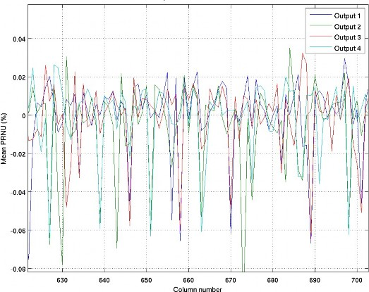
Figure 29: Average response across columns (all rows of PRNU image averaged together) for Module 15. The periodic drops in response of ~0.05% were seen in the module tests at the same relative depth. The period of the response variation is 11.56 pixels. Similar response variations are seen in all module outputs Figure from [Caldwell, 2007].
Intrapixel Response Nonuniformity
Intrapixel response nonuniformity (IRNU) is the variation of photoresponse within a pixel. It is an important source of photometric noise, since the observed signal will change for sub-pixel motions and will not be corrected by PRNU, which is applied to the entire pixel. As such, it defines the maximum permissible concentration of light in a single pixel in the PRF (§3.5) as well as the requirements on pointing jitter and drift (§3.7).
The laboratory measurement of IRNU is considerably more difficult than PRNU. It is necessary to image a source that is small compared to a pixel, keeping it steady to sub-pixel accuracy (~0.1 pix), while precisely dithering it around a pixel. The effective intra-pixel response can depend on the f-number of the illumination since, for fast optical systems like Kepler the rays from a single source are entering the pixel at quite different angles. It also depends on wavelength, and whether the CCD is front or back illuminated. Because of the experimental difficulties, this detector property relies more on models and comparison to similar CCDs instead of direct measurement.
The results (modeled in Jenkins et al. 2004) are expressed in terms of a pixel response function S(x,y), in terms of the intrapixel coordinates (x,y); it is assumed that S(x,y) is the same for all pixels in a channel, as found by Jorden et al. (1994). For the back-illuminated results for the Tektronix 1024 CCD reported by Jorden et al. (1994), the scale and symmetry of intrapixel response variation is shown in Figure 30. The 1/3 pixel periodicity in the 3 phase Tek device is replaced by a 1/4 pixel periodicity in the Kepler 4-phase devices. Below 600 nm, the variation of S(x,y) is quite small, while at 850 nm, the peak-peak variation is
~10%. This is due to the fact that the longer wavelength light travels through the entire CCD thickness
and is absorbed in or very near the active region, so that there is little opportunity for diffusion from the absorption site before readout. At these wavelengths, S(x,y) exhibits variations that are consistent with the physical gate structure of the CCD. Conversely, this also explains the relative unimportance of intrapixel sensitivity variations for short-wavelength light, which is absorbed above the active region and must diffuse down into it prior to readout. The “blue” light never sees the gate structure, which has the opportunity to scatter the “red” light. Like chromatic aberration, the wavelength dependence of intrapixel response gives a PRF which varies with wavelength, and hence with stellar spectral type. While important for requirement definition, intrapixel response is not modeled in the pipeline,
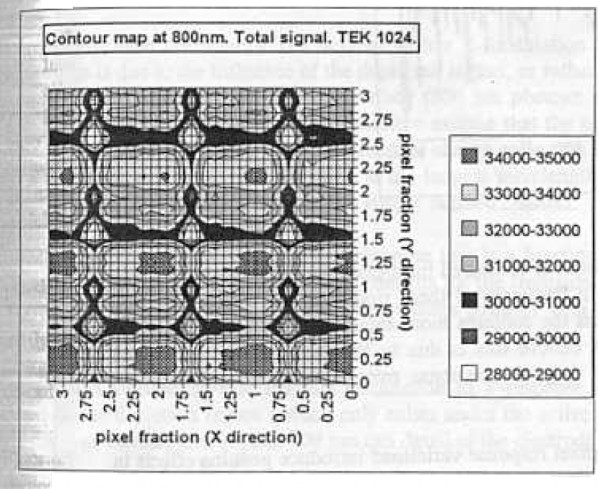
Figure 30: Contour map of Tek 1024 back-illuminated CCD response from Jorden et al. (1994).
The 1/3 pixel periodicity in this 3 phase device is replaced by a 1/4 pixel periodicity in the Kepler 4- phase devices.
Flats
There are two separate flat models that are combined into one flat. The "small-scale flat" is generated from the PRNU data and contains information only on local pixel scales using a 9x9 pixel high-pass filter (KAM §2.3.5.12). The "large-scale flat" FC model contains vignetting and obscuration (§3.6 and KAM
§2.3.5.11). Pipeline calibration is done with the combined flat.
Bad Pixels
Pixels are considered bad if their photoresponse is different from that of their neighbors by more than 5%, or if they have high dark current (i.e., greater than the detection limit of 0.2 e-/s compared to neighboring pixels). The fraction of the focal plane from which targets containing at least one bad pixel are excluded is determined by convolving a 5x5 pixel box with the map of all bad pixels, taking the 5x5 box to be a
typical target aperture (Caldwell, 2007). Conversely, a target is deemed unusable if there is at least one bad pixel in the 5x5 box centered on the unusable pixel. Only about 1% of the focal plane is so excluded, corresponding to roughly <2 bad pixels per 1000 before convolution. Bad pixels are not masked or excluded from targets by the Kepler pipeline, as discussed in KAM §2.3.5.13.
Cosmic Rays
Cosmic rays (CRs) can have both prompt and persistent effects on the signal measured on a pixel. The prompt effect is a charge from the ionization trail of the CR, which corrupts the signal until the pixel is next read out. The dominant persistent effect is Sudden Pixel Sensitivity Dropoffs (SPSD), in which pixel responsivity decreases discontinuously, then slowly returns towards the pre-event level. Such effects are likely due to non-ionizing energy loss (NIEL) interactions, in which the lattice is damaged, and may require annealing to remove. While Kepler was built with annealing heaters, the possible benefits of annealing were not considered compelling compared to the loss of science observing time for the annealing activity and subsequent thermal stabilization of the CCDs and LDE. SPSDs can be considerably larger than Earth-sized transits, and their mitigation is discussed in the KDPH and Stumpe et al. (2012). While CR removal occurs on the ground, not onboard, it involves hardware phenomena and is thus described in this Handbook. This section discusses prompt effects only, and treats together the effects of Galactic and Solar particles.
A cosmic ray typically deposits charge in about 4 pixels, depending on its angle of incidence on the CCD. The charge deposited in a single pixel by a cosmic ray is here called a pixel event, while the set of all pixel events caused by a single CR particle is called a particle event. For requirements definition, Kepler adopted a particle flux of 5 cm−2 s−1 based on previously flown missions in similar orbits (Jenkins et al.
2004). During Commissioning, the pixel and particle event histograms were measured by collecting single-integration FFIs with the dust cover on, thus reducing the read noise to that of a single integration and setting a threshold of 600 e- for 6σ pixel event detection (Figure 31). The observed pixel event histogram (Figure 31) shows an increasing number of events at smaller charge dumps until the pixel events get lost in the read noise, while the observed particle event histogram (not shown) is strongly peaked around about 2600 electrons with a long weak tail at higher energies. The >6σ pixel event rate was approximately 10 cm-2 s-1, in good agreement with predictions given the difficulty of detecting small pixel events in the presence of read noise. Therefore, during a 30 minute LC, 30% of the pixels were expected to suffer detectable pixel events. Equivalently, each target suffers on the average 2.0 particle events per LC, with several pixel events per particle event, for the average aperture containing 32 pixels.
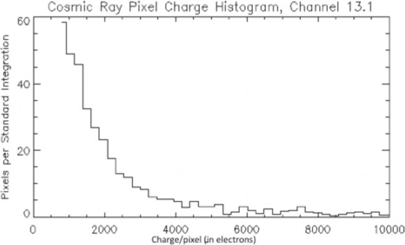
Figure 31: Cosmic Ray pixel event charge dump histogram for Channel 13.1 in units of e-. These single-integration FFI data were collected in the dark, before dust cover ejection, during Commissioning. Only pixel events exceeding 6x the 100 e- read noise threshold are shown.
There are several reasons to perform cosmic ray cleansing at the pixel level (Twicken et al. 2010). While most target apertures will suffer a CR particle event on every cadence, hobbling efforts to remove CR particle events from total aperture flux time series, different pixels are affected on different LCs, and CR pixel events can be identified as positive outliers in LC pixel time series. Shot noise is less for dim pixels, making it is much easier to identify cosmic rays, and for each target some pixels in the aperture are much dimmer than others.
Each cosmic ray event can then be replaced with a temporally local average of each pixel’s time series without the cosmic ray pixel events. Twicken et al. (2010) and Morris et al. (2016) present a detailed discussion of cleaning cosmic rays from the data.
A bestiary of Cosmic Ray events observed in Commissioning is shown in Figure 32.
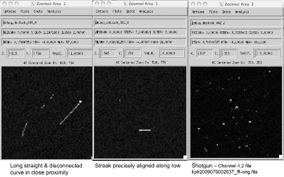
Figure 32: Interesting Cosmic Ray Events seen in pre-DCE Commissioning data.
Local Detector Electronics
Description
The Local Detector Electronics clocks the CCDs, digitizes their output, and transmits the single-frame data to the Science Data Accumulator (SDA) where the DN for each pixel are coadded. The LDE operates both the science CCDs and the FGS CCDs in such a way that precisely 5 FGS frames occur during a 0.52 s science readout. The CCDs may be run with their parallel clocks reversed, called ‘Reverse Clock’ or ‘Test’ State of the LDE, in order to sweep current away from the output amplifier and permit noise measurements on the CCDs when warm or illuminated. There are two redundant sets of electronics inside the same chassis, not surprisingly called ‘Side 1’ and ‘Side 2’. The LDE is redundant between the input of the A/D converter and the output of the LDE, but single-string between the CCD and the input of the A/D converter. Side 2 has somewhat better performance, so most ground test data collection has concentrated on Side 2 to characterize it in detail, while Side 1 has been tested, in most cases, for noise and functionality only. Only Side 2 was used in flight.
Figure 33 shows a cutaway view of the integrated LDE chassis with the CCD flex cable components of the module interface. Spacecraft power is provided to the LDE Power Supply (LPS) from the bus control assembly (BCA). The LPS generates load regulated, low ripple power to the LDE with optimized voltages to allow a LDE power dissipation ~100W.
The Driver board
Generates the parallel and serial clock waveforms and bias voltages to operate the CCD,
Conditions the CCD video signal for the LDE Acquisition board, and
Conditions and digitizes the thermometry signals from the CCD modules, ECA boards and the heat spreader.
The Acquisition board with block redundant FPGAs performs the following functions:
Generates the CCD control timing for the driver board,
Processes the video signal from the driver board through the correlated double sample (CDS) and ADC signal processing chain,
Generates Science and FGS pixel data by encoding the ADC data with synchronization words into serial words transmitted through redundant low voltage differential signal (LVDS) interfaces,
Provides the telemetry and command interface for the KCB, and
Generates stable programmable integration and cadence timing for transit observations.
The semi-rigid motherboard distributes input power from the LPS to the five ECAs and provides digital data routing to the Kepler control box (KCB) through controlled impedance differential signal pairs.
The semi-rigid motherboard distributes input power from the LPS to the five ECAs and provides digital data routing to the Kepler control box (KCB) through controlled impedance differential signal pairs.
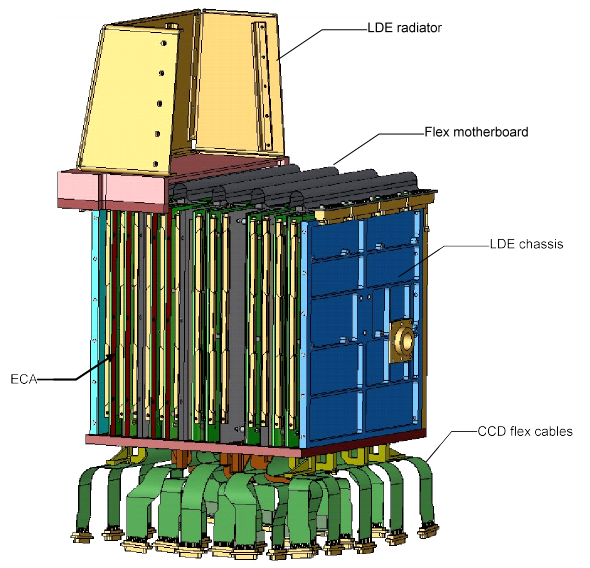
Figure 33: Cutaway view of LDE.
The LDE circuit mapping and time slice locations are shown in Figure 34. Each ECA has interfaces for 5 CCD modules (either Science or FGS); the CCD interface number ranges from 1 to 5. For example, CCD input 2 on ECA 501 is labeled ECA501_CCD2 in the Figure. Two ECAs service three Science modules and two FGS modules, while the other three ECAs exclusively attend to five Science modules. For example, ECA500 has 2 FGS interfaces, ECA500_CCD1 and ECA500_CCD5, with the rest Science modules. Every Science module channel has a dedicated preamplifier on the driver board. On the acquisition board, there are only four Science signal processing chains which operate simultaneously, so that each signal processing chain is assigned to a module output. The module read outs are staggered in time slices separated by 0.62 seconds; for each time slice, a multiplexer on the acquisition board routes the video from the currently read out module to the appropriate signal processing channel. For example, the Figure shows that modules 8, 15, 17, and 24 are on the same time slice. Knowledge of time slice gives a time stamp with an uncertainty (0.52 s) much smaller than the typical 58.85 s total short cadence integration time. See KAM §2.1.2 and KDCH §6 for further discussion of timing.
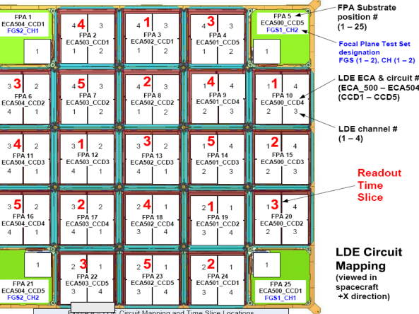
Figure 34: LDE Circuit Mapping and Time Slice Locations. Each module is labeled by FPA number (also called module number), ECA and CCD interface number, and time slice. Each of the 4 outputs for each module is shown by a number 1-4 in each quadrant of the module. This Figure complements Figure 24. The view in the spacecraft +X direction is from the primary mirror towards the corrector.
At the Science pixel read-out rate of 3 MHz, the read out time for each channel is 0.52 seconds. All 4 outputs in a given module are read at the same time. The entire array can be read out in a minimum of
3.12 s for each time slice. A programmable delay appended to the end of the module read out cycle allows a maximum integration time of 8 seconds. During this delay, photons are collected but the CCD clocks are paused and no data is digitized. Each FGS module has a dedicated signal processing chain on the acquisition board so that each FGS module is continuously read out every 0.104 seconds. While the serial transfer rate for the Science and FGS modules are identical, the per line transfer duration and rates are different. This causes clock to video crosstalk between the Science and FGS modules as discussed in §6.1.
5.2 Clocks and Sampling
CCDs require a large number of complex waveforms for inputs and for use in signal processing of the analog output signals. Collectively, these waveforms are called clocking patterns. They are specified in integer multiples of the 48 MHz master clock, and one pixel period is 16 master clock cycles = 333 ns. Parallel clocks move a row of charge packets towards the serial register; the parallel transfer period, or time required to advance the pixels by one row, is 323 pixel periods, during which no data is digitized.
After a row is advanced into the serial register, serial clocks move charge packets (pixel values) to the on- chip output amplifier. It takes 1132 pixel periods to read out that row. The total line period is then 1455 pixel periods, or a line rate of 2064 Hz. Finally, the Clamp On, Clamp Off, and A/D Convert clocks
regulate the timing of sampling and holding the correlated double sampling (CDS) signal, and converting it to digital numbers.
In addition to the nominal forward clocked Science acquisition mode, a test mode that reverse clocks the CCD modules facilitates read noise measurements for room temperature operation, or for cold CCD measurements when the focal plane is illuminated with stars.
When the Science CCD modules are forward clocked, the electrical charge injection feature present in the Science module can be activated by asserting the Charge Injection clock, to inject charge for four consecutive lines with a signal level ~40% of full well. Charge injection is used to fill radiation induced traps in the parallel gates, thereby improving the parallel CTE. The charge injection feature is also used as a system gain and undershoot (§6.5.2) monitor. Charge injection appears as a roughly uniform signal of ~4000 DN/frame between rows 1059 and 1062 of each channel, excluding the virtual pixels.
Electronic Image Artifacts and Their Mitigation
Ideally, the images produced by the LDE would contain only those features described in §4, around which the baseline data processing pipeline was designed (see KDPH). The actual LDE introduces additional features into the images, which are called Artifacts, which have the potential to corrupt the photometric accuracy because either their amplitude changes with time and LDE temperature, or their location changes with telescope jitter and drift, or both amplitude and location change. The Artifacts may be scene-independent, and are hence present in dark images collected before Dust Cover Ejection; or they may be scene-dependent, in which case the Artifact amplitudes and positions can depend not only on the amplitude and position of the target, but of nearby sources as well. Artifacts must be treated in one of 3 ways:
Show Artifacts to be negligible in photometric time series on time scales relevant to transits (1-48 hr). The components of an Artifact which do not change with LDE temperature, time, or telescope pointing on 1-48 hr timescales may be detectable, but are inconsequential for photometric time series,
Correct Artifacts in data analysis, or
Detect and flag data as suspect because of uncorrected Artifacts.
A working definition of “negligible” is that the Artifact contributes a false signal of peak-to-peak amplitude
< 20 ppm, which is much less than the 84 ppm amplitude of an Earth-sized planet transiting a 12th magnitude G2V star. Since such a star produces a signal of about 12700 DN per frame, and its optimal aperture contains about 16 pixels, an artifact must be considered significant if its amplitude is greater than
0.016 DN/pixel/frame or 4.3 DN/pixel/LC. While artifacts of this amplitude cannot be seen in individual pixels in individual FFIs, they can be detected by averaging rows or columns, forming average images out of many FFIs, or by Fourier transforms of rows of pixels.
This Section presents a description of the Artifacts so that observers can assess the efficacy of these three treatments at a particular point in Pipeline development for the science that they wish to do; and devise specialized post-Pipeline tools if necessary.
LDE Temperature
The single most significant factor so far identified in determining the amplitude and location of Artifacts is the LDE board temperatures, which are proxies for the amplifier temperatures which are not directly measured. Not only do the gross features of an Artifact depend on the temperature of the boards, which are thermal averages over a timescale of minutes, but the features of an Artifact within a Channel depend on the transient heating of the amplifier between the time when it is turned on 104 ms before reading a channel, and when it has completed a read 519 ms later. This is because the thermal time constant of the active part of the amplifier is much less then the thermal time constant of the boards. Even more remarkably, the temperature of this amplifier depends on instantaneous signal level, so Artifacts can be excited locally by saturating sources as shown in §6.7.4.
On the other hand, Kepler was in a very benign thermal environment, in which the board temperature varied slowly and monotonically between quarterly rolls, with the exception of the monthly downlinks. The mean of the 10 board temperatures over a year is shown in Figure 35. For over 90% of the mission, the rate of temperature change was less then 2 mK/hr, or 0.10 K in 48 hr. Hence, Artifacts present in all pixels of an aperture, which have a linear thermal coefficient of < 0.14 DN/frame/pixel/K, may be considered negligible, with respect to the 0.016 DN/pixel/frame criterion described in the previous Section. If they are present in only one pixel, then a linear thermal coefficient of < 2 DN/frame/pixel/K is tolerable.
Mean LDE Board Temperature Q5−Q8
32.5
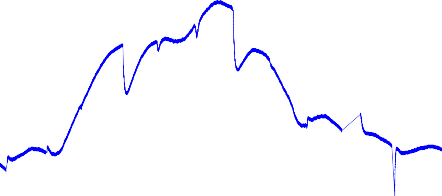
32
31.5
C
31
30.5
30
29.5
250 300 350 400 450 500 550 600 650
MJD − 55000
Figure 35: Mean LDE board temperature over a year (Q5-Q8), showing the effect of quarterly rolls, 30 day downlink maneuvers, and safe modes. See the DRNs or KDCH for details of historical events in this time interval.
This rosy picture is complicated by safing events, one of which occurred on 6/16/09 and the next on 7/2/09. Then, the LDE was shut down for about two days, and the thermal and secular transients start anew. Fortunately, there were only 7 Safe Modes in the subsequent 3.5 yr of the Kepler mission.
FGS ! Science Clock Crosstalk
Description
It is unusual to operate two different kinds of focal planes from the same electronics box, or at least the same PC card, for good reason: unless the two kinds of focal planes have the same clocking pattern, clock events occurring on one focal plane may be detected in the data of the other, which is called clock crosstalk. However, because of the need to pack all the detector electronics into a box inside the telescope, this principle of good hygiene was not practical to implement on Kepler, and science and FGS circuits are both present in the same box, and in some instances on the same ECA. So it is no surprise that there is FGS clock crosstalk into the Science channels, and Science crosstalk into the FGS channels. The amplitude of this effect is constant from frame to frame for a given channel, but varies in magnitude among channels from nil to about 20 DN per frame, and can be either positive or negative. Fortunately, the Science and FGS frames were designed to be commensurate by the judicious allocation of virtual pixels, and are run from common clocks, so that the FGS clock crosstalk is a fixed pattern in the Science images. There are then three fixed classes of Science pixels: those collected during FGS Serial Transfer, those collected during FGS parallel transfers, and those collected during FGS Frame Transfers; there is no case in which Science pixels are read, and FGS clocks are not running. Figure 36 shows the pixel locations of the various forms of FGS clock crosstalk in a Science image. Empirically, there is no crosstalk in the FGS Serial Transfer regions. Figure 37 shows fine structure in the FGS Parallel and FGS Frame Transfer regions. While each class of crosstalk cannot be represented as a single number because of this fine structure, the position of the fine structure is exactly repeatable, and a signature template for each class of crosstalk can be generated. Each element of the template represents a pixel in the same relative position with respect to its class of crosstalk, called a pixel type. There is also Science clock to FGS crosstalk, which is remedied by an ADCS algorithm. The pixels are enumerated in the Clock State Mask FC model delivered to MAST (KAM §2.3.5.1) and their identification is discussed in KADN-26205 (Van Cleve, 2008).
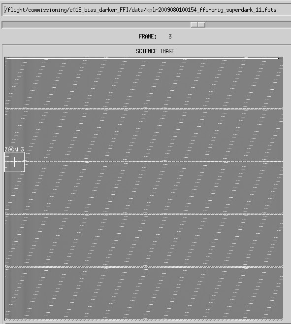
Figure 36: Dark 270-frame FFI of Channel 11.3 showing FGS Parallel Transfer crosstalk (diagonal hash) and Frame Transfer crosstalk (horizontal lines). Everything else is a science pixel collected during an FGS Serial Transfer. The FGS Parallel Transfer crosstalk regions are spread by analog signal propagation from the theoretical width of 16 pixels to the observed width of 32 pixels. The image is linearly scaled to 26 DN/frame.
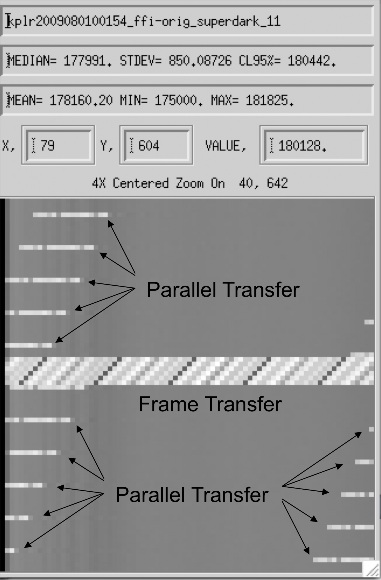
Figure 37: Zoom showing Parallel and Frame Transfer pixels in detail, marked as “Zoom 3” in Figure 36. Note that the crosstalk has a widely varying amplitude within each crosstalk type. The image is linearly scaled to 26 DN/frame.
Photometric Consequences
Since the crosstalk always appears on the same pixels, only variations with temperature and explicitly with time need be considered. Empirically, explicitly secular variations die out a few days after the LDE is turned on, and since the LDE is meant to stay on for the duration of the mission – barring Safe Mode (§7.1) events – they are generally negligible. On the other hand, the temperature coefficient of some pixel types on some channels exceed 0.30 DN frame/pixel/K, so thermal variations must be corrected.
Mitigation
FGS crosstalk mitigation is the best-understood Artifact at this time, and hence has a formal correction algorithm. It is mitigated by constructing a two-dimensional model of the black output of each channel, which can in principle be different for each LC (dynamic black), unlike the original data processing pipeline, which applied the same 2D black to all LCs (static black). The black model is then subtracted from the data during pixel-level calibration. This dynamic model has three parts:
A spatially invariant component
A smoothly varying spatial component representing the serial clocking FGS pixel offset from constant.
A discrete spatial component representing the offsets of various types of parallel and frame clocking FGS pixels from neighboring serial pixel values.
To construct an estimate of the 2D black levels for a specific Kepler exposure, these components are calculated based on a combination of information specific to that exposure and information regarding temporal and thermal trends obtained over an extended series of exposures and reverse-clocked images. The detailed formalism for correcting FGS crosstalk and other artifacts is shown in Kolodziejczak et al. (2010) and the KDPH.
Video Crosstalk
Science-to-Science Video crosstalk is the coupling between the outputs pixels smorc and sm’o’rc, using the MORC notation of §4.3. It can be responsible for false positives if there is a time-varying source at nontarget source pixel smorc which couples to the target pixel sm’o’rc. Empirically, intramodule crosstalk -- the coupling between the different outputs of a given module (m = m’,o ≠ o’) -- is significant, while the intermodule crosstalk (m ≠ m’) is not. This is not surprising, since the LDE was designed with shields between the board pairs and staggered module read-out (time slice) to eliminate intermodule crosstalk, but there is no way to isolate a module from itself. The intramodule crosstalk can be positive, negative, or negligible, but is assumed to be the same for all r and c for a given set of m, m’, o, and o’. It is not necessarily true that the o!o’ crosstalk is equal to the o’!o crosstalk. The largest value observed is -46 dB, or a factor of 200 attenuation between source and target pixels, so in some cases follow-up observations of the objects at the same m, r, and c but different o may be needed to rule out bogus signals in the target pixels. See Figure 38 for an example. The video crosstalk FC model (KAM
§2.3.5.18) was derived from Commissioning data and has been delivered to MAST.
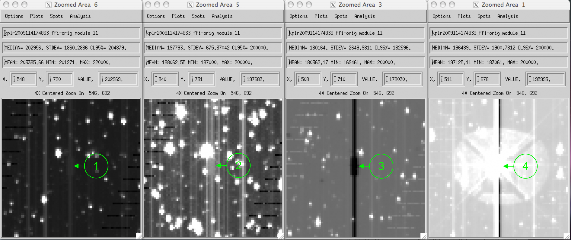
Figure 38: Video crosstalk in module 11, outputs 1-4 from left to right. The bright star is in output 4, which crosstalks as a negative image into output 3, and weak positive images into outputs 1 and 2 (somewhat obscured by adjacent bright star and high star density). Circled numbers corresponding to each output point at the video crosstalk feature (outputs 1-3) and the center of the star image (for output 4). Note that the charge bleed column also crosstalks. Output 4 also shows a field flattener lens ghost (§3.10).
There is also FGS-to-Science Video crosstalk, distinct from the clock crosstalk discussed in §6.2, but since the arrays are read out at different rates this crosstalk is sparsely distributed in the science image,
and can be detected only when the science data are repacked into the same format as FGS data. It is insignificant in flight photometric data.
Science Clock and Video Crosstalk into FGS
Science-to-FGS clock crosstalk is significantly larger than the noise in the FGS image in some FGS channels. Since science clocks do not operate continuously, but only during pixel readout, the science- to-FGS crosstalk amplitude varies with FGS frame, so removing this with a fixed dark image does not work. However, the Flight Software has incorporated an algorithm which measures the amplitude of the Science-to-FGS clock crosstalk in the virtual pixel region of each FGS image, and removes the FGS crosstalk from the Pixels of Interest collected for centroiding and attitude determination.
Science-to-FGS video crosstalk is expected to be insignificant for the same reason that FGS-to-Science video crosstalk is insignificant: the crosstalk from one kind of detector is distributed across the image formed by the other type of detector at an undetectable level, unless the image is repacked into the source detector format.
FGS to FGS video crosstalk can in principal be significant, since crosstalk is mapped onto the same pixel coordinates in different modules. To examine FGS-to-FGS video crosstalk in lab data, the Science-to- FGS clock crosstalk was removed to isolate weak FGS-to-FGS video crosstalk signals. While crosstalk was detectable at the ~1 DN = -60 dB level by this method, it was in all cases less than 0.3% of the stimulus, or -50 dB, and hence has a negligible effect on centroiding accuracy compared to errors from other sources. Centroid stability is unaffected since, for a fixed set of ADCS stars, the error introduced by FGS-to-FGS crosstalk does not change with time.
Start-of-Line Ringing
Description
After each row of 1132 pixels is read out from the serial register, the array uses 323 pixel periods to parallel clock the next row into the serial register. At the start of the next readout of the serial register, there is a voltage transient which is called Start-of-Line Ringing (SOLR). SOLR can be well- approximated for all channels by
5 ⎛ ⎛ c
⎞⎞
s = ∑ A e−c /τ i sin⎜2π⎜
+ φ ⎟⎟ Eq. 6.5-1
morc
i
i=1
⎝ ⎝ Pi
i
⎠⎠
An example image is shown in Figure 39, and an example of fitting Eq. 5-1 to the data in Figure 40. While the residuals shown exceed the 0.016 DN/pixel/integration discussed at the start of this Section, they are not expected to vary significantly with time or LDE temperature.
All time constants are <100 pixels so SOLR is undetectable after 300 columns, or 27% of the image.
SOLR is not precisely equal on all rows of an image, or precisely constant in time, so photometric calibration requires a static 2D black model (KAM §2.3.5.2), based on a large number of dark, cold, FFIs, to remove most of the SOLR, rather than fits to Eq. 6.5-1.
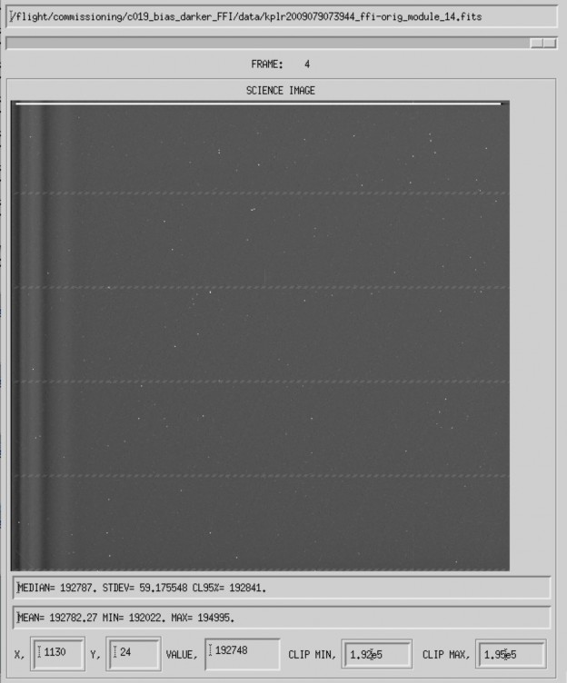
Figure 39: 270 frame, 30 minute FFI showing Start-of-Line ringing for the channel requiring the greatest number of terms for a good fit, Channel 14.4. The image is cold, forward-clocked, and linearly scaled between “Clip Min” and “Clip Max.” Same data as used for Figure 40.
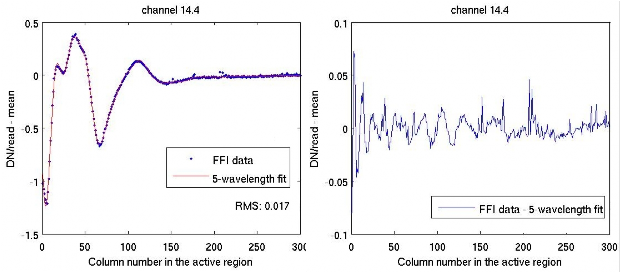
Figure 40: 5-term damped oscillator fit to Start-of-Line ringing for the channel requiring the greatest number of terms for a good fit, Channel 14.4. Left: Fit to data. Right: Residuals showing that the 5-term fit has residuals < 0.02 DN/read. Same data as in Figure 39.
Photometric Consequences
SOLR is a relatively benign artifact, since the thermal variation is small (<0.05 DN/read) for the ΔT=2.5 C expected between quarterly rolls. The corresponding thermal variation is comparable to the fit residuals. Since the structure of SOLR is comparatively constant, and varies linearly with temperature in the temperature range of interest, the changes over transit time scales are on the order of 0.001 DN/pixel/read and are negligible.
Mitigation
In flight data, SOLR was stable enough in time and temperature to be an insignificant source of photometric error (Kolodziejczak et al., 2010).
Undershoot
Description
Undershoot is the distortion of signals with large pixel-to-pixel variation in the direction of the change. Low-signal pixels immediately following (downstream of) high-signal pixels drop below the undistorted signal level for those pixels, and vice versa for steep increases in signal. For example, when a step function input – such as Charge Injection – goes to zero relative to the local black level of the CCD, the observed signal goes below zero and remains detectably below zero for the longest delays analyzed (20 pixels), as shown in Figure 41. In flight data, it is most noticeable in columns adjacent to bleeding columns from saturating stars, as shown in Figure 42. In KADN-26197 (Van Cleve, 2016b), the linear part of undershoot is treated in detail for each channel. Channels 11.3 and 15.3 have undershoots 3x larger than the next largest undershoot.
Closer examination of the undershoot phenomenon (Kolodziejczak, 2009c) shows that there is a non- linear component as well, which was small enough to be negligible for pipeline data analysis.
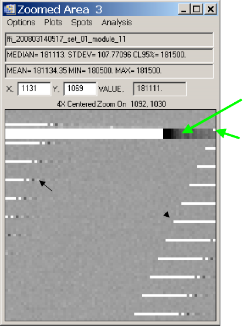
Undershoot
Charge Injection Rows
FGS Crosstalk
FGS Crosstalk (single pixel at end of row)
Figure 41: End of Charge Injection rows, showing Undershoot and FGS Crosstalk examples, in a dark image collected during TVAC. This image shows the largest undershoot observed when the CCD is cold, in channel 11.3.
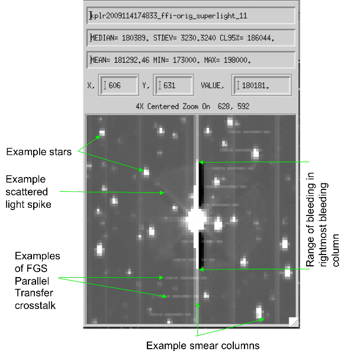
Figure 42: Undershoot adjacent to charge bleeding column in Channel 11.3. Because of the sub- pixel location of the star, there is bleeding in two columns, with a greater extent in the rightmost bleeding column, for which the extent of bleeding is marked by green arrows. The two columns to the right of the bleeding columns show the undershoot in black. FGS Parallel Transfer crosstalk, 8-fold symmetric scattered light, stars, and smear are also visible in this image.
Photometric Consequences
Undershoot corrupts photometry because:
The amplitude and time constants change with time and temperature.
The location of a source upstream of a target aperture changes as a result of pointing jitter and drift.
The upstream source is time-variable, and that variability is carried into the target aperture in attenuated form.
Mitigation
The short and medium time scale components of the linearized model (KAM §2.3.5.10 and KADN-26197) can be made photometrically insignificant by monitoring thermal and secular variation in the Charge Injection region, and by including an extra column of pixels on the upstream edge of the target aperture to monitor variable upstream sources. All pipeline processing before Data Release 24 used a constant undershoot FC model, which has been delivered to MAST (KAM §2.3.5.10). Data Release 24 and later use a dynamically generated undershoot model as part of the overall dynamic black fit (Kolodziejczak et al., 2010).
Aliased High Frequency Noise
The amplifier circuit used in the LDE is only marginally stable in the GHz frequency range, because the circuit self-resonates. The amplitude and frequency of this resonance depends on:
LDE driver and acquisition board temperatures,
The amplifier temperature, which is not directly known,
Time since LDE turn on, a distinct secular term in addition to the effects caused by temperature variation with time, and
Channel number.
The amplifier temperature increases with time after the amplifier is turned on, one FGS frame before readout begins, and also spikes in temperature when high signal levels are read. Thus the GHz noise varies in frequency with row, and can appear in rows containing bright sources without appearing in rows more distant than 20 rows from the bright source. This GHz noise is aliased by the 3 MHz pixel sampling rate of the LDE, and the summation over the 270 frames in a typical FFI or LC.
Roughly 35 of the 84 channels have been afflicted with this problem at some temperature or time. However, the relatively narrow band of temperatures experienced during science operations means that only 12 to 14 of the potentially troublesome channels show this problem at a photometrically significant level. See Table 13 for a list of afflicted channels and KAM §2.3.1, §2.3.2, and §2.3.7 for flagging of afflicted archive data.
Aliased to near-Zero Spatial Frequency: Rolling Bands
When the GHz noise frequency is an integer multiple of the pixel sampling rate for some combination of board temperature and image row, then the noise is aliased down to near-zero frequency, as shown in Figure 43 and Figure 44. Since the rows with the aliased noise move (or “roll”) with small changes in board temperature, this phenomenon is called a Rolling Band.
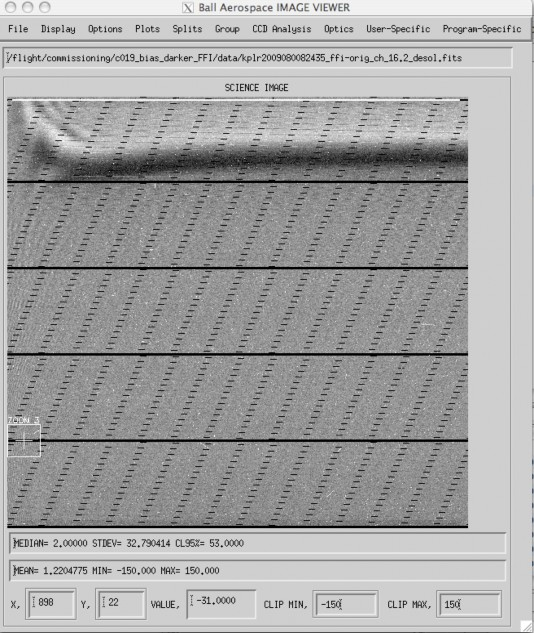
Figure 43: Example of Rolling Band low frequency noise, channel 16.2, collected during dark measurements pre-DCE. Note that there is considerably more structure in the first 300 columns, where SOLR is also found. SOLR and the black level have been removed from the image to make the Rolling Band more apparent. The resulting image is scaled linearly over the range shown, or
+/- 0.55 DN/frame. Since these data were collected pre-DCE, the board temperatures are ~8 C warmer than during Science operations, so these images are examples which are not necessarily indicative of that channel’s properties during Science operations.

Figure 44: Example of Rolling Band low frequency noise collected during dark measurements collected pre-DCE. Same channel, integration parameters, SOLR and black removal, and scaling as in Figure 43, but collected 2.5 hr later. The Rolling Band has moved upward and in subsequent FFIs has moved out of the image. The zoom boxes are shown below (Figure 45) in the discussion of Moire patterns.
Aliased to near-Nyquist Spatial Frequency: Moiré
Merriam-Webster defines moiré as “An independent, usually shimmering, pattern seen when two geometrically regular patterns (as two sets of parallel lines or two halftone screens) are superimposed, especially at an acute angle.”
The term Moiré was applied to the visual appearance of the aliased GHz noise in FFIs. Figure 45 (zoom of Figure 44) shows how the aliased frequency increases further away from the Rolling Band. The short
spatial frequency of the aliased noise in the Moiré region is comparable to the size of target apertures, and hence phase shifts of the aliased noise are well-coupled to the photometric time series.
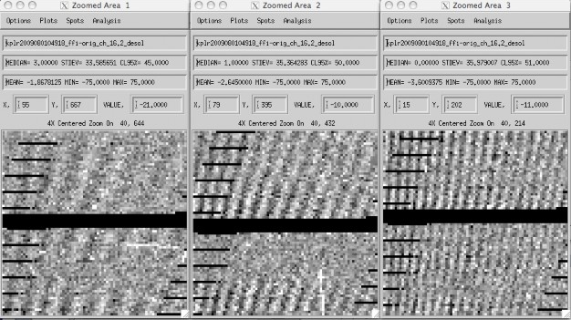
Figure 45: Moiré patterns, from the zoom boxes shown in Figure 44. Scaling is linear, +/- 0.28 DN/frame. Black horizontal patterns are FGS crosstalk.
Detection in Row Fourier Transforms
The Moiré pattern is particularly easy to see in row-by-row Fourier transforms of dark images, especially if SOLR, black level, and FGS crosstalk are removed from the image. An example from pre-DCE dark data collected during Commissioning is shown in Figure 46. See Kolodziejczak et al. (2010) for a discussion of using differences of illuminated in-flight FFIs to detect Moiré patterns.
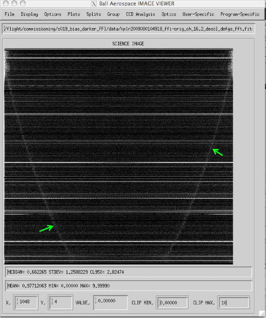
Figure 46: Row-by-row Fourier Transform of data shown in Figure 44 and Figure 45. Vertical axis is row, horizontal axis is cycles per column. The Moiré pattern is the parabolic, grey arc (highlighted by green arrows). The zero crossing is where the parabolic grey arc intersects the left vertical axis near the top of the image, and the corresponding Nyquist crossing is where the arc intersects the right vertical axis. Note that the zero crossing of the Moiré frequency coincides with the position of the Rolling Band shown in Figure 44. Horizontal lines are cosmic-ray hits.
Excitation by Bright Sources
When a saturated pixel is presented to the amplifier, a greater amount of charge flows through the amplifier than when a pixel of low signal level is present. This charge flow causes a very local, very short time constant (<2 row periods = 0.97 ms) thermal transient. Since LDE temperature, and by inference amplifier temperature, is the most important factor in determining Artifact features, it is in hindsight not surprising that bright stars can excite the Moiré pattern for pixels following a bright pixel in a given row (as shown in Figure 47).

Figure 47: Three examples of excitation of Moiré pattern by bright stars on channel 17.2. These data were collected at shorter frame times and hence a higher LDE temperature than during Science Operations, so these images are examples and not necessarily indicative of that channel’s properties during Science operations. The afflicted regions are to the right of each bright source and its charge bleed column, and bounded by the green lines. Note propagation of artifact into the trailing black region in the rightmost panel.
Photometric Consequences
Figure 48 shows that Moiré patterns can induce complex time-dependent signal variations in aperture- size regions at flight-like temperature stability. The peak-to-peak amplitude handily exceeds the 0.016 DN/pixel/frame threshold for corrupting the photometry of 12th magnitude stars (Kolodziejczak et al., 2010) and the signal variations are on time scales from several to 40 hrs.
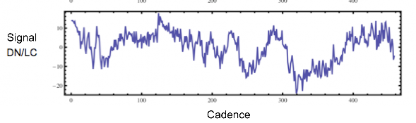
Figure 48: Example Moiré-afflicted photometric time series extracted from columns 41-43 of the Virtual smear region dark TVAC data, channel 9.2. Abscissa is Long Cadence index. From Kolodziejczak, 2008.
Mitigation
Mitigation in the pipeline consists of identifying Moiré and Rolling Bands and flagging the afflicted target/cadence combinations in the data stream using the methods of Kolodziejczak et al. (2010). Hence, the targets in the Moiré regions shown in Figure 45 and Figure 47 would be flagged and their threshold crossing events considered suspect. See KAM Table 2-3.
Long Cadence Artifact Removal Pixels (ARPs)
Before the Artifacts were discovered, a small number of pixels, called Photometer Performance Assessment (PPA) pixels, were assigned as LC targets to measure and trend basic detector properties, on the assumption that these properties were spatially and temporally stable. The spatial and temporal variation of Artifacts requires a much larger set of pixels, called the Artifact RemovaI pixels (ARPs), to identify or remove these artifacts on a cadence-by-cadence basis. In combination with the LCC data, ARPs will characterize FGS crosstalk and undershoot, and remove them for each point in time, while increasing the per-pixel noise as a result of these corrections by <5%. The PPA pixels are a subset of the ARPs. The total number of ARPs per channel is 3355, or roughly 5.2% of the average number of LC pixels available per channel. The same ARPs are also used in the Reverse Clock (RC) Target Definition Table (TDT). In addition, the RC TDT contains pixels used only in RC, called the RC-only pixels. The set union of ARPs and RC-only is the RC TDT, and the intersection of ARPs and RC-only is null. See KADN- 26205 (Van Cleve, 2008) for more detail, including images of the pixel sets.
Observing with Kepler
Flight System Modes and States
This Section summarizes the modes, states, and mode / state transitions that occur on the Kepler Flight Segment. The intent is to show not only Flight Segment (FS) modes, but also subsystem modes or states that correspond to Flight Segment Modes. The purpose is to give the observer an idea of how Kepler operates in order to better understand the data. SP0039-607 provides a much more detailed discussion.
First, some definitions. A Flight Segment Mode is defined as a unique function performed by the Flight Segment. Activities that drive differences in power consumption, attitude control, and data collection are typically different Flight Segment Modes. A FS Mode is defined by a set of subsystem modes or states, though there are a few instances in which a subsystem condition can change without changing the FS mode (i.e., telecomm comes on). A Subsystem Mode or State is a set of subsystem conditions that exist within a Flight Segment Mode; for example, whether the ADCS is using star trackers, FGS, or the Sun to determine attitude. An autonomous transition is that which is internal to the Flight Segment, and does not require intervention from the ground.
The Flight Segment modes of most interest to observers are:
Planet Find. The science data collection mode, in which LCs and SCs are generated and the ADCS and FGS have attained their required fine pointing stability. During thruster firings, the FS transitions to two other closely related modes, during which data is collected as during Planet Find, but tagged as suspect because of the other activities going on aboard the spacecraft.
Photometer Maintenance, in which science FFIs may be collected for calibration or FGS FFIs can be collected for ADCS or LDE diagnostics.
Reverse Clock, in which reverse-clocked LCs (§5) may be collected for calibration or noise trending purposes. Since the FGS are reverse-clocked at the same time, this cannot be done in Fine Point.
Safe Mode, in which the SSR remains powered on and previously collected data is retained for future downlink after Safe Mode recovery. Historical Safe Modes are shown in the Mission Timeline in KDCH §4.1.
Emergency Mode, in which the SSR is powered off and all on-board science data is lost.
Kepler did not entered Emergency Mode during its primary mission.
These states, and many others used for nonscience operations, are shown in Figure 49.
Operations are relatively simple compared to, say, Hubble, since Kepler is in Planet Find mode for 30 days at a time between downlinks. Kepler is designed to continuously perform one scientific measurement, pointed at just one place on the sky. Less than 10% of the time is budgeted to losses from desaturations, downlinks, and safe mode recoveries.
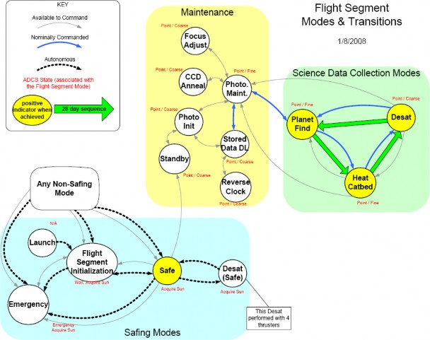
Figure 49: Mode and Transition Diagram from SP0039-607.
Default Operating Parameters
LDE Configuration
The three LDE operating parameters of most interest to observers are the per-frame integration time (INT), the number of frames per SC (parameter name also SC), and the number of SCs per LC (parameter name LC). These are set by the FDMCFGLDE command, with low, flight default, and high values shown in Table 10. The integration time is an integer number of FGS frame periods (103.79 ms), with valid integration time values between 2.60 seconds to 7.99 seconds. The value of INT selected for flight is 56, giving an integration time of 6.02 s and a frame period of 6.54 s. Frame time and number of frames coadded can also be set for FFIs during calibration observations, but in practice have been identical to the LC integration parameters.
Table 10: Parameters for the LDE configuration command FDMCFGLDE.
Parameter | Low | Flight Nominal Value | High |
INT | 23 | 56 | 75 |
LC | 15 | 30 | 120 |
SC | 7 | 9 | 19 |
These and related parameters may be confirmed by examining these items in the primary FITS header of an LC target pixel file (this example from Q0 data):
FGSFRPER= 103.79 / FGS frame period (milli-seconds) NUMFGSFP= 58 / number of FGS frame periods per exposure EXP_TIME= 6.01982 / exposure time (seconds)
READTIME= 518.95 / read out time (milli-seconds)
INT_TIME= 6.53877 / integration time (seconds) (exp + readout time) NUMSHORT= 9 / number of integrations in a short cadence frame TEXP_SC = 54.1784 / total short cadence exposure time (seconds) TREAD_SC= 4.67055 / total short cadence readout time (seconds) TINT_SC = 58.8489 / total short cadence integration time (seconds) SHRTLONG= 30 / number of short cadences per long cadence
NUM_FFI = 270 / number of integrations in a science FFI
Flight Software Parameters
Flight software does some simple arithmetic on pixels, such as adding collateral pixels and adding and subtracting offsets. They are listed in the primary FITS header of an LC target pixel file. Standard values (from Q0 data):
LCFXDOFF= | 419400 / | long cadence FSW black level fixed offset (cnts |
SCFXDOFF= | 219400 / | short cadence FSW black level fixed offset (cnt |
/ Collateral Pixel Definition
VSMRSROW= 1046 / science collateral virtual smear region start r
VSMREROW= 1057 / science collateral virtual smear region end row NROWVSMR= 12 / number of rows binned in virtual smear region
VSMRSCOL= 12 / science collateral virtual smear region start c
VSMRECOL= 1111 / science collateral virtual smear region end col
NCOLVSMR= 1100 / number of columns in virtual smear region
MASKSROW= 6 / science collateral masked region start row
MASKEROW= 17 / science collateral masked region end row
NROWMASK= 12 / number of rows binned in masked region
MASKSCOL= 12 / science collateral masked region start column MASKECOL= 1111 / science collateral masked region end column
NCOLMASK= 1100 / number of columns in masked region BLCKSROW= 0 / science collateral black region start row BLCKEROW= 1069 / science collateral black region end row
NROWBLCK= 1070 / number of rows in black region
BLCKSCOL= 1118 / science collateral black region start column
BLCKECOL= 1131 / science collateral black region end column NCOLBLCK= 14 / number of columns binned in black region
LCFXDOFF and SCFXDOFF are the same for each channel, and are not physically significant. The black level per frame in DN for each channel is given by the header item MEANBLCK in the FITS extension for that channel, and is typically about 700 DN. KAM §2.4 has additional description of these and other parameters.
Times and Time Stamps
Precise and accurate calculation of the absolute time of observed events is a basic function of any observatory. This Section describes the times generated by events in the Flight System.
Time on board the spacecraft is recorded as a Vehicle Time Code (VTC), which has a resolution of 3.9 ms. Cadence data is stamped with the VTC of the end of the cadence. At the MOC, VTC is converted to Coordinated Universal Time (UTC) using knowledge of Kepler’s position and the comparison of time stamps in time correlation packets generated onboard the spacecraft with the Earth Received Time (ERT) of the packet. At the SOC, per-cadence UTCs are converted to per-target Barycentric Dynamical Time (TDB) for each target, as described in KAM §2.1.2 and in more detail in KDCH §6.
The time stamp conventions for data flowing into or out of the SOC are described in the FS-GS ICD (BATC 2216784), the DMC-SOC ICD (KDMC-10007), the MOC-DMC ICD (BATC 2207600), and the SOC-MOC ICD (KSOC-21171).
Data Compression
In order to observe as many stars as possible while keeping the data volume within the capacity of the SSR, the data is compressed in 3 steps detailed below: Requantization, Baseline Subtraction, and Huffman (entropic) encoding. These steps occur in the Flight System and are reversed before data arrives at the SOC, and hence are described in the KIH. For Kepler, these steps compressed 23-bit cadence pixel values to 4.7-5.4 bits, averaged over all the targets in a Quarter, as predicted by the Algorithm Theoretical Basis Document (ATBD, Jenkins et al. (2004)) §12. Much of the material in this Section follows ATBD §12.
Requantization
Quantization is the conversion of an analog signal into DN by the ADC. The values in the SDA are coadded quantized values S, which are themselves quantized values. Requantization is the mapping R(S) of quantized pixel values onto a smaller number of integer values. One or more consecutive quantized values are mapped to the same requantized value. The interval in quantized values between adjacent requantized values is the requantization step size ΔQ ; in a continuous approximation, that is
dR 1
= . Eq. 7.4-1
dS ΔQ (S)
This mapping can be designed so that the effective noise added to the quantized value by requantization is a constant percentage of the total noise; hence for higher signal values that are noisier due to shot noise, more quantized values can be mapped on to a single requantized value. In this way, the requantized data range has fewer values than the quantized data range, and hence can be represented by a smaller number of bits. The requantized data is derequantized by mapping R’ to give the uncalibrated pixel value S’= R’R(S). Though this process adds an acceptably small amount of noise, it is noticeable since R(S) is not one-to-one and therefore R’R projects the set of all possible S on to a smaller subset of values. The histogram of derequantized values will have gaps since the information about which of the several quantized values mapped to the one recorded requantized value has been lost.
Below is a simple example the reader may find informative.
For simplicity, suppose that the quantization interval (1 DN) is comparable to or greater than the minimum noise, which in the case of Kepler CCDs is the read noise. The read noise is at least 0.8 DN for all channels, satisfying this assumption. Let ΔQ(S) (in DN) then be the requantization interval at a signal S, for which the observed (quantized) uncertainty is σq(S). Then the uncertainty in the requantized then derequantized values S’, σR’R , is simply the sum of the observational noise and the quantization noise:
σ 2 = σ 2 + Δ2 12 Eq. 7.4-2
R ' R q Q
in which all quantities are a function of S and in units of DN per cadence. Further simplifying by setting read noise per frame to 1 DN and black level to zero
q
fr
σ 2 = (n + S /G) Eq. 7.4-3
where G is the gain in e-/DN and nfr is the number of frames coadded in the cadence. A choice of
ΔQ = σ q increases noise by only 4%. Then
n fr + S /G
R(S) = 2G
. Eq. 7.4-4
fr
For typical G = 100 e-/DN and n =270, a 22.1 bit range of S (0 to 270*214) is mapped on to 15.4 bits to represent the range of R, which is 0 to 42193.
In practice, one must include a fixed offset corresponding to the black level for each channel, and account for the maximum observable signal, which is below the maximum A/D output of 214-1. Additional complications arise from the need to represent the collateral data as well, and the use of the same requantization table for all channels.
Baseline Subtraction
If the data were constant, it would be easy to compress by taking just the first value of a data stream! For variable data, one tries to model the data to some extent in order to reduce the data volume to that needed to explain deviations from the model. A simple nontrivial way to model data is to say that new data is equal to old data for a certain amount of time into the past; this is the idea behind Baseline subtraction, in which a baseline requantized pixel set is subtracted from the current requantized pixel set. For Kepler, baselines were stored every 24 hr, then subtracted from the subsequent 24 hr of data. For K2, data is less predictable because of the roll error, and baselines are stored every 12 h and phased to avoid thruster firings.
Huffman Coding
Huffman coding compresses the baseline-subtracted requantized data further by assigning short bit strings to common data numbers and long bit strings to rare data numbers. These symbols are prefix- encoded, which means that the decoder reads bits until it recognizes the code for a given data number, then knows the next bit begins the code for the next data number. See Jenkins et al. §12 (2004) and the “Huffman_coding” Wikipedia page for exposition.
Photometric Precision Estimation
In the absence of systematic photometric errors, the photometric precision attainable for isolated K-F stars of 12th magnitude or fainter is approximately
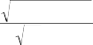
f
2
Kep int a R
n fr fKeptint
t + n N
P0 = p
Eq. 7.5-1
and the photocurrent of the target in e-/s is
Kep Kep12
f = 10−0.4( mKep −12) f Eq. 7.5-2
where fKep12 is the benchmark photoelectron current at the Kepler focal plane for a 12th magnitude star = 2.1x105 e-/s (Bachtell and Peters, 2008), tint is the per-frame integration time, nfr = total number of frames in the benchmark 6.5 hr transit period, na is the number of pixels in the photometric aperture, mKep is the apparent magnitude in the Kepler bandpass, NR the read noise, and p is an empirical constant between 1 and 2 which accounts for all other noise sources. Modeling and lab photometry experiments give p~1.2. Eq. 7.5-1 ignores stellar variability σ*. The stellar variability is red noise and so does not average down as 1/sqrt(t), and will in general be different for different spectral types and even different members of the same class and type. However, for the purpose of deriving an error budget for Kepler, it was assumed to be white noise of 10 ppm for 12th magnitude G2V planetary target stars. In that sense the total noise, referred to as combined differential photometric precision (CDPP) is:
P + σ
2
2
0 *
P = Eq. 7.5-3
For brighter sources the precision will be better than that of a 12th magnitude star, but the simple formula above will be inaccurate as bright star photometry is dominated by systematic effects rather than just shot and read noise. For very red or blue sources, Eq. 7.5-1 will also be inadequate.
Table 11: Photometric precision estimates for stars fainter than 12th magnitude, for 6.5 hr of LCs with texp = 6.0 s/frame. P0 does not include stellar variability, while P does. Stellar variability is assumed to be a constant 10 ppm for all spectral types in this Table, as per Kepler’s design. The accurate calculation of P for any particular star will depend on its Kepler magnitude, the power spectrum of its variability, and the transit duration over which LCs are averaged, and is outside the scope of this simple model.
NR f12 | 120 2.00E+05 | e- e-/s |
texp | 6 | S |
nfr | 3575 |
|
n_a | 20 |
|
astro noise | 10 | ppm |
V | Po (ppm) | P(ppm) |
12.0 | 20.4 | 22.7 |
12.5 | 27.1 | 28.9 |
13.0 | 36.8 | 38.1 |
13.5 | 51.1 | 52.1 |
14.0 | 73.0 | 73.7 |
14.5 | 106.8 | 107.3 |
15.0 | 159.9 | 160.2 |
15.5 | 243.4 | 243.6 |
16.0 | 375.6 | 375.7 |
KDCH §3 shows statistics for the actual CDPP throughout the Kepler mission, compared to a “Shot and Read Noise Limit” which is the estimate in this Section with p = 1.0. The Kepler instrument and stellar noise properties are discussed in more detail by Gilliland et al. (2011, 2015). One of the main conclusions of Gilliland et al. (2011) is the Sun is in fact a fairly atypical “solar-type” star, and a more typical value for σ* is 20 ppm rather than 10 ppm.
Mapping Targets to Pixel Coordinates
The software tool RaDec2Pix (Jenkins et al. 2016) converts equatorial coordinates (right ascension & declination) to Kepler focal plane coordinates (module, output, row, column) and back (See Jenkins et al. 2004 §10 for theory). The transformations include optical distortions (§3.8) based on the angular offsets of the corners of each CCD chip as projected through the optics onto the sky, DVA (§3.9), the gap between CCDs on a module and the gaps between modules, and the rotation angle between the row and column axes of the CCDs and the telescope coordinate system. These misalignments need to be accounted for in order to achieve the 0.1 pixel accuracy required by Kepler.
Before launch, the parameters in RaDec2Pix were based on metrology of module and CCD chip locations, and an optical model consistent with images collected by the as-built Photometer. After launch, the best fit parameters for each of the 84 channels were obtained from star images. The FC pointing, roll- time, and focal plane geometry models needed to recreate RaDec2Pix have been delivered to MAST (KAM §2.3.5.14-16). To obviate the need to recreate the database and retrieval tools needed by RaDec2Pix and its inverse (Pix2RaDec), the simplified pixel mapping file morc_2_ra_dec_4_seasons.xls showing the corners and centers of each channel for each season (KAM Table 3-1) has been delivered to MAST as an FC model file (KAM Table 2-7). An excerpt of the file is shown in Table 12. This spreadsheet may be sorted so that the reader can see on which channels a celestial coordinate was located during the year; for targets themselves, MAST may be searched by channel and season.
Table 12: Excerpt of MORC to RA-Dec conversion table included in Supplement. Units are decimal degrees. The zero-based [row column] locations are the channel corners (with a 5 pixel margin) and center. The Supplement shows all channels and Seasons.
Spring
module output row column ra dec
2 | 1 | 25 | 17 | 282.1189 | 45.1198 |
2 | 1 | 25 | 1106 | 283.1730 | 44.1797 |
2 | 1 | 535 | 550 | 282.0234 | 44.3086 |
2 | 1 | 1038 | 17 | 280.9000 | 44.4110 |
2 | 1 | 1038 | 1106 | 281.9606 | 43.4812 |
2 | 2 | 25 | 17 | 284.2032 | 43.2200 |
2 | 2 | 25 | 1106 | 283.1835 | 44.1701 |
2 | 2 | 535 | 550 | 283.0969 | 43.3389 |
2 | 2 | 1038 | 17 | 282.9992 | 42.5324 |
2 | 2 | 1038 | 1106 | 281.9712 | 43.4718 |
2 | 3 | 25 | 17 | 281.7181 | 41.7707 |
2 | 3 | 25 | 1106 | 280.6839 | 42.6982 |
2 | 3 | 535 | 550 | 281.8061 | 42.5824 |
2 | 3 | 1038 | 17 | 282.8943 | 42.4710 |
2 | 3 | 1038 | 1106 | 281.8662 | 43.4098 |
2 | 4 | 25 | 17 | 279.6081 | 43.6256 |
2 | 4 | 25 | 1106 | 280.6733 | 42.7075 |
2 | 4 | 535 | 550 | 280.7260 | 43.5402 |
2 | 4 | 1038 | 17 | 280.7950 | 44.3484 |
2 | 4 | 1038 | 1106 | 281.8556 | 43.4192 |
Channel Properties Summary
In this Section, the detector (Table 13) and optical (Table 14) properties of each channel are summarized, so that data users may be aware that that the signal and noise properties of a time series will change as a target moves to a different channel with a change of season and quarterly roll.
Table 13: Detector Properties. The ECA is the board pair driving the channel, and acquiring data from it. The combination of ECA, ECA input #, and Module output # specifies which amplifier chain is used for each channel. Yellow indicates out-of-spec value or peculiar measurements.
Red indicates high Moiré amplitude which may compromise time series interpretation.
| Read Noise | Read Noise |
Gain |
Under |
Well |
|
Mod |
|
| Time | ECA | Side 2 | Side 2 | Side 2 | shoot | depth | RB |
Out | Ch | ECA | Slice | input # | DN | e- | (e-/DN) | % | e- | Moire |
2.1 | 1 | 503 | 4 | 1 | 0.79 | 87.6 | 111.2 | 0.25 | 1.03E+06 |
|
2.2 | 2 | 503 | 4 | 1 | 0.97 | 103.3 | 106.9 | 0.21 | 1.04E+06 |
|
2.3 | 3 | 503 | 4 | 1 | 1.12 | 116.4 | 103.5 | 0.26 | 1.08E+06 |
|
2.4 | 4 | 503 | 4 | 1 | 1.06 | 111.0 | 104.8 | 0.44 | 1.05E+06 |
|
3.1 | 5 | 502 | 1 | 1 | 0.72 | 80.5 | 111.9 | 0.26 | 1.18E+06 |
|
3.2 | 6 | 502 | 1 | 1 | 0.82 | 92.0 | 112.0 | 0.22 | 1.18E+06 |
|
3.3 | 7 | 502 | 1 | 1 | 1.59 | 149.0 | 93.5 | 0.30 | 1.09E+06 |
|
3.4 | 8 | 502 | 1 | 1 | 1.06 | 108.1 | 101.8 | 0.47 | 1.05E+06 |
|
| Read Noise | Read Noise |
Gain |
Under |
Well |
Mod |
|
| Time | ECA | Side 2 | Side 2 | Side 2 | shoot | depth RB |
Out | Ch | ECA | Slice | input # | DN | e- | (e-/DN) | % | e- Moire |
4.1 | 9 | 501 | 3 | 5 | 0.79 | 88.6 | 111.6 | 0.71 | 1.01E+06 |
|
4.2 | 10 | 501 | 3 | 5 | 0.77 | 73.9 | 95.6 | 0.69 | 9.47E+05 |
|
4.3 | 11 | 501 | 3 | 5 | 0.80 | 83.2 | 104.7 | 0.36 | 1.10E+06 |
|
4.4 | 12 | 501 | 3 | 5 | 0.74 | 84.2 | 113.5 | 0.60 | 1.13E+06 |
|
6.1 | 13 | 504 | 3 | 2 | 0.74 | 84.0 | 113.2 | 0.49 | 1.07E+06 |
|
6.2 | 14 | 504 | 3 | 2 | 0.79 | 78.8 | 99.9 | 0.16 | 1.02E+06 |
|
6.3 | 15 | 504 | 3 | 2 | 0.77 | 83.1 | 108.1 | 0.17 | 1.08E+06 |
|
6.4 | 16 | 504 | 3 | 2 | 0.73 | 81.8 | 111.8 | 0.59 | 1.05E+06 |
|
7.1 | 17 | 503 | 5 | 2 | 0.76 | 85.4 | 111.7 | 0.40 | 1.02E+06 |
|
7.2 | 18 | 503 | 5 | 2 | 0.73 | 81.0 | 111.0 | 0.17 | 1.04E+06 |
|
7.3 | 19 | 503 | 5 | 2 | 0.77 | 85.9 | 111.1 | 0.15 | 1.02E+06 |
|
7.4 | 20 | 503 | 5 | 2 | 0.78 | 85.6 | 110.1 | 0.46 | 1.03E+06 |
|
8.1 | 21 | 502 | 2 | 2 | 0.72 | 80.2 | 111.9 | 0.31 | 1.07E+06 |
|
8.2 | 22 | 502 | 2 | 2 | 0.91 | 95.0 | 104.7 | 0.07 | 1.06E+06 |
|
8.3 | 23 | 502 | 2 | 2 | 0.75 | 83.2 | 111.4 | 0.16 | 1.02E+06 |
|
8.4 | 24 | 502 | 2 | 2 | 0.77 | 86.7 | 112.8 | 0.31 | 1.05E+06 |
|
9.1 | 25 | 501 | 4 | 4 | 0.79 | 90.0 | 114.6 | 0.04 | 1.11E+06 |
|
9.2 | 26 | 501 | 4 | 4 | 1.03 | 116.4 | 113.4 | 0.31 | 1.13E+06 |
|
9.3 | 27 | 501 | 4 | 4 | 0.79 | 89.3 | 112.4 | 0.23 | 1.09E+06 |
|
9.4 | 28 | 501 | 4 | 4 | 0.72 | 82.5 | 113.8 | 0.52 | 1.05E+06 |
|
10.1 | 29 | 500 | 1 | 4 | 0.72 | 80.7 | 112.3 | 0.41 | 1.13E+06 |
|
10.2 | 30 | 500 | 1 | 4 | 0.94 | 99.5 | 105.7 | 0.20 | 1.15E+06 |
|
10.3 | 31 | 500 | 1 | 4 | 0.72 | 83.0 | 115.5 | 0.33 | 1.10E+06 |
|
10.4 | 32 | 500 | 1 | 4 | 0.73 | 84.6 | 115.5 | 0.66 | 1.14E+06 |
|
11.1 | 33 | 504 | 4 | 3 | 0.73 | 84.3 | 115.0 | 0.51 | 1.05E+06 |
|
11.2 | 34 | 504 | 4 | 3 | 0.76 | 88.1 | 115.6 | 0.24 | 1.02E+06 |
|
11.3 | 35 | 504 | 4 | 3 | 0.81 | 92.5 | 114.7 | 1.90 | 1.02E+06 |
|
11.4 | 36 | 504 | 4 | 3 | 1.20 | 120.5 | 100.2 | 0.69 | 1.07E+06 |
|
12.1 | 37 | 503 | 1 | 3 | 0.73 | 79.5 | 109.2 | 0.12 | 1.10E+06 |
|
12.2 | 38 | 503 | 1 | 3 | 0.76 | 80.9 | 107.1 | 0.16 | 1.05E+06 |
|
12.3 | 39 | 503 | 1 | 3 | 0.77 | 87.5 | 114.4 | 0.14 | 1.08E+06 |
|
12.4 | 40 | 503 | 1 | 3 | 1.14 | 121.1 | 106.0 | 0.15 | 1.10E+06 |
|
13.1 | 41 | 502 | 3 | 3 | 0.73 | 84.2 | 115.8 | 0.15 | 1.12E+06 |
|
13.2 | 42 | 502 | 3 | 3 | 0.74 | 84.8 | 114.7 | 0.11 | 1.13E+06 |
|
13.3 | 43 | 502 | 3 | 3 | 0.75 | 81.3 | 109.1 | 0.14 | 1.04E+06 |
|
13.4 | 44 | 502 | 3 | 3 | 1.27 | 126.9 | 100.2 | 0.45 | 1.05E+06 |
|
14.1 | 45 | 501 | 5 | 3 | 0.78 | 88.2 | 113.3 | 0.24 | 1.04E+06 |
|
14.2 | 46 | 501 | 5 | 3 | 0.75 | 85.5 | 114.0 | 0.18 | 1.02E+06 |
|
14.3 | 47 | 501 | 5 | 3 | 0.80 | 90.4 | 112.8 | 0.13 | 1.08E+06 |
|
14.4 | 48 | 501 | 5 | 3 | 1.06 | 112.0 | 105.3 | 0.29 | 1.04E+06 |
|
15.1 | 49 | 500 | 2 | 3 | 0.75 | 85.7 | 113.8 | 0.06 | 1.12E+06 |
|
15.2 | 50 | 500 | 2 | 3 | 0.74 | 83.0 | 112.8 | 0.20 | 1.15E+06 |
|
15.3 | 51 | 500 | 2 | 3 | 0.75 | 81.5 | 109.3 | 1.73 | 1.08E+06 |
|
15.4 | 52 | 500 | 2 | 3 | 0.97 | 103.8 | 106.7 | 0.33 | 1.05E+06 |
|
| Read Noise | Read Noise |
Gain |
Under |
Well |
|
Mod |
|
| Time | ECA | Side 2 | Side 2 | Side 2 | shoot | depth | RB |
Out | Ch | ECA | Slice | input # | DN | e- | (e-/DN) | % | e- | Moire |
16.1 | 53 | 504 | 5 | 4 | 0.73 | 87.4 | 120.0 | 0.39 | 1.11E+06 |
|
16.2 | 54 | 504 | 5 | 4 | 1.08 | 109.2 | 101.4 | 0.32 | 1.14E+06 |
|
16.3 | 55 | 504 | 5 | 4 | 0.85 | 90.5 | 106.7 | 0.31 | 1.17E+06 |
|
16.4 | 56 | 504 | 5 | 4 | 0.73 | 77.1 | 105.0 | 0.57 | 1.15E+06 |
|
17.1 | 57 | 503 | 2 | 4 | 0.74 | 86.2 | 117.1 | 0.39 | 1.09E+06 |
|
17.2 | 58 | 503 | 2 | 4 | 1.11 | 120.6 | 108.4 | 0.11 | 1.06E+06 |
|
17.3 | 59 | 503 | 2 | 4 | 0.77 | 88.1 | 113.8 | 0.17 | 1.08E+06 |
|
17.4 | 60 | 503 | 2 | 4 | 0.81 | 93.7 | 115.4 | 0.39 | 1.09E+06 |
|
18.1 | 61 | 502 | 4 | 4 | 0.71 | 79.4 | 112.5 | 0.47 | 1.03E+06 |
|
18.2 | 62 | 502 | 4 | 4 | 1.08 | 109.4 | 101.7 | 0.13 | 1.03E+06 |
|
18.3 | 63 | 502 | 4 | 4 | 0.77 | 86.2 | 112.5 | 0.20 | 1.04E+06 |
|
18.4 | 64 | 502 | 4 | 4 | 0.75 | 85.5 | 114.0 | 0.34 | 1.06E+06 |
|
19.1 | 65 | 501 | 1 | 2 | 0.76 | 85.6 | 113.3 | 0.47 | 1.01E+06 |
|
19.2 | 66 | 501 | 1 | 2 | 0.87 | 89.6 | 103.0 | 0.08 | 1.02E+06 |
|
19.3 | 67 | 501 | 1 | 2 | 0.80 | 90.3 | 112.9 | 0.17 | 1.06E+06 |
|
19.4 | 68 | 501 | 1 | 2 | 0.72 | 80.0 | 111.9 | 0.59 | 1.01E+06 |
|
20.1 | 69 | 500 | 3 | 2 | 0.74 | 81.4 | 109.5 | 0.41 | 1.16E+06 |
|
20.2 | 70 | 500 | 3 | 2 | 0.76 | 81.0 | 107.1 | 0.20 | 1.14E+06 |
|
20.3 | 71 | 500 | 3 | 2 | 0.72 | 83.2 | 115.1 | 0.11 | 1.13E+06 |
|
20.4 | 72 | 500 | 3 | 2 | 0.75 | 87.1 | 115.6 | 0.61 | 1.13E+06 |
|
22.1 | 73 | 503 | 3 | 5 | 0.74 | 79.1 | 107.1 | 0.28 | 1.13E+06 |
|
22.2 | 74 | 503 | 3 | 5 | 0.73 | 79.4 | 108.3 | 0.45 | 1.14E+06 |
|
22.3 | 75 | 503 | 3 | 5 | 0.78 | 82.3 | 104.9 | 0.16 | 1.19E+06 |
|
22.4 | 76 | 503 | 3 | 5 | 0.80 | 84.6 | 105.2 | 0.42 | 1.16E+06 |
|
23.1 | 77 | 502 | 5 | 5 | 0.72 | 81.3 | 112.7 | 0.66 | 1.07E+06 |
|
23.2 | 78 | 502 | 5 | 5 | 0.74 | 83.9 | 112.7 | 0.58 | 1.05E+06 |
|
23.3 | 79 | 502 | 5 | 5 | 0.85 | 83.1 | 97.3 | 0.37 | 1.15E+06 |
|
23.4 | 80 | 502 | 5 | 5 | 0.73 | 84.0 | 115.8 | 0.60 | 1.13E+06 |
|
24.1 | 81 | 501 | 2 | 1 | 0.82 | 96.3 | 117.0 | 0.30 | 1.08E+06 |
|
24.2 | 82 | 501 | 2 | 1 | 0.83 | 97.0 | 116.4 | 0.25 | 1.06E+06 |
|
24.3 | 83 | 501 | 2 | 1 | 1.43 | 139.0 | 97.2 | 0.30 | 1.14E+06 |
|
24.4 | 84 | 501 | 2 | 1 | 0.97 | 99.5 | 102.8 | 0.48 | 1.12E+06 |
|
Table 13 Notes:
Read Noise – Same as FC model delivered to MAST (KAM §2.3.5.7), file kplr2008102416_read- noise.txt. Source of Data Set: Measured during the Ball Detector Flight Segment Thermal/Vacuum test (FS0011) of Aug-Sep 2008. The specific measurements are taken from the 25 LDE side-2 FFIs taken at the end of the Cold Thermal Balance (CTB) portion of the test. These data were taken under the most flight like conditions during ground testing and represent the best estimate of the expected read noise in orbit.
Gain – Same as FC model delivered to MAST (§2.3.5.8), file kplr2008072318_gain.txt. The gains are in units of electrons/DN. The gain values contained in this delivery were calculated by Ball from the PH0002 gain test at nominal operating temperatures using the method described in §4.9 and detailed in KADN-26196.
Undershoot – First undershoot coefficient – 1, from FC model delivered to MAST (KAM §2.3.5.10), file kplr2008102809_undershoot.txt. Source of Data Set: The data are from the Charge Injection regions of 275 frame FFIs with timestamp 200803140517 and 200803140837, collected during Photometer Thermal Vacuum testing, Cold Acceptance. The results from these two data sets were averaged together to give the twenty parameters of a digital forward filter, one set for each channel. The integral of this charge-conserving δ-function response is equal to the first term – 1, which is shown in the Table. See KADN-26197 (Van Cleve, 2016b).
Well Depth – The well depth is the number of electrons at which the forward differential photoresponse is decreased by 2.5% compared to its small-signal value. That is, a small change in photon input produces a change in system output that is 2.5% less than what occurs when applying that same small change to signals half as large or less. See KADN-26196 (Van Cleve, 2016a).
Rolling Band and Moiré – Estimate of intensity during Q0. Yellow indicates a rating of “medium” in FFI data or visually detected in the CDPP LCC data, and red indicates “high” in the FFI data (all of which were detected visually in the CDPP LCC data). The approximate peak-to-peak amplitude ranges corresponding to “high” Moiré amplitude is > 0.06 DN/frame/pixel = 16 DN/LC/pixel. These estimates are now calculated by the Dynablack module (Jenkins et al., 2016) based on the methods of Kolodziejczak et al. (2010), and are presented here only to give an estimate of the prevalence of the artifact.
Table 14: Optical Properties of Each Channel. EE95 is the 95% encircled energy diameter in pixels, BPFF (Brightest pix Flux Fraction) is the fraction of point source flux contained in the brightest pixels of the PRF, 'Rotation' indicates the orientation. See text for further explanation. The PRFs on which this table is based have been delivered to MAST (KAM §2.3.5.17).
Rotation
Mod.Out Ch EE95 BPFF +Y' +Z' ROT
2.1 | 1 | 4.938 | 0.371 | +rows | +cols | 0 |
2.2 | 2 | 4.457 | 0.313 | +rows | -cols | 5 |
2.3 | 3 | 6.028 | 0.273 | -rows | -cols | 2 |
2.4 | 4 | 6.766 | 0.280 | -rows | +cols | 7 |
3.1 | 5 | 3.752 | 0.519 | +rows | +cols | 0 |
3.2 | 6 | 4.040 | 0.468 | +rows | -cols | 5 |
3.3 | 7 | 5.259 | 0.385 | -rows | -cols | 2 |
3.4 | 8 | 4.970 | 0.424 | -rows | +cols | 7 |
4.1 | 9 | 3.687 | 0.516 | +rows | +cols | 0 |
4.2 | 10 | 4.810 | 0.406 | +rows | -cols | 5 |
4.3 | 11 | 6.862 | 0.293 | -rows | -cols | 2 |
4.4 | 12 | 5.323 | 0.435 | -rows | +cols | 7 |
6.1 | 13 | 4.361 | 0.403 | +cols | -rows | 1 |
6.2 | 14 | 4.553 | 0.392 | -cols | -rows | 6 |
6.3 | 15 | 5.868 | 0.448 | -cols | +rows | 3 |
6.4 | 16 | 5.066 | 0.463 | +cols | +rows | 4 |
7.1 | 17 | 3.335 | 0.524 | +rows | +cols | 0 |
7.2 | 18 | 3.687 | 0.456 | +rows | -cols | 5 |
7.3 | 19 | 3.752 | 0.448 | -rows | -cols | 2 |
7.4 | 20 | 3.944 | 0.507 | -rows | +cols | 7 |
8.1 | 21 | 3.463 | 0.530 | +rows | +cols | 0 |
8.2 | 22 | 3.752 | 0.500 | +rows | -cols | 5 |
8.3 | 23 | 3.687 | 0.510 | -rows | -cols | 2 |
8.4 | 24 | 3.271 | 0.570 | -rows | +cols | 7 |
9.1 | 25 | 3.495 | 0.558 | -cols | +rows | 3 |
9.2 | 26 | 3.142 | 0.606 | +cols | +rows | 4 |
Rotation
Mod.Out Ch EE95 BPFF +Y' +Z' ROT
9.3 | 27 | 3.591 | 0.529 | +cols | -rows | 1 |
9.4 | 28 | 4.297 | 0.480 | -cols | -rows | 6 |
10.1 | 29 | 5.098 | 0.419 | -cols | +rows | 3 |
10.2 | 30 | 3.976 | 0.495 | +cols | +rows | 4 |
10.3 | 31 | 5.836 | 0.387 | +cols | -rows | 1 |
10.4 | 32 | 7.535 | 0.276 | -cols | -rows | 6 |
11.1 | 33 | 4.136 | 0.386 | +cols | -rows | 1 |
11.2 | 34 | 4.072 | 0.398 | -cols | -rows | 6 |
11.3 | 35 | 4.778 | 0.434 | -cols | +rows | 3 |
11.4 | 36 | 5.066 | 0.427 | +cols | +rows | 4 |
12.1 | 37 | 4.521 | 0.381 | +cols | -rows | 1 |
12.2 | 38 | 4.649 | 0.375 | -cols | -rows | 6 |
12.3 | 39 | 3.752 | 0.499 | -cols | +rows | 3 |
12.4 | 40 | 3.655 | 0.509 | +cols | +rows | 4 |
13.1 | 41 | 4.585 | 0.400 | +cols | -rows | 1 |
13.2 | 42 | 4.232 | 0.414 | -cols | -rows | 6 |
13.3 | 43 | 4.104 | 0.448 | -cols | +rows | 3 |
13.4 | 44 | 4.104 | 0.443 | +cols | +rows | 4 |
14.1 | 45 | 3.367 | 0.578 | -cols | +rows | 3 |
14.2 | 46 | 3.206 | 0.603 | +cols | +rows | 4 |
14.3 | 47 | 3.495 | 0.505 | +cols | -rows | 1 |
14.4 | 48 | 3.527 | 0.503 | -cols | -rows | 6 |
15.1 | 49 | 3.816 | 0.527 | -cols | +rows | 3 |
15.2 | 50 | 3.784 | 0.516 | +cols | +rows | 4 |
15.3 | 51 | 4.778 | 0.364 | +cols | -rows | 1 |
15.4 | 52 | 4.874 | 0.390 | -cols | -rows | 6 |
16.1 | 53 | 5.547 | 0.253 | +cols | -rows | 1 |
16.2 | 54 | 5.323 | 0.199 | -cols | -rows | 6 |
16.3 | 55 | 6.188 | 0.257 | -cols | +rows | 3 |
16.4 | 56 | 6.830 | 0.256 | +cols | +rows | 4 |
17.1 | 57 | 3.752 | 0.458 | +cols | -rows | 1 |
17.2 | 58 | 3.752 | 0.426 | -cols | -rows | 6 |
17.3 | 59 | 3.367 | 0.508 | -cols | +rows | 3 |
17.4 | 60 | 3.816 | 0.531 | +cols | +rows | 4 |
18.1 | 61 | 4.329 | 0.444 | -rows | -cols | 2 |
18.2 | 62 | 3.784 | 0.503 | -rows | +cols | 7 |
18.3 | 63 | 3.431 | 0.550 | +rows | +cols | 0 |
18.4 | 64 | 4.072 | 0.459 | +rows | -cols | 5 |
19.1 | 65 | 3.591 | 0.549 | -rows | -cols | 2 |
19.2 | 66 | 3.206 | 0.559 | -rows | +cols | 7 |
19.3 | 67 | 3.303 | 0.617 | +rows | +cols | 0 |
19.4 | 68 | 3.976 | 0.552 | +rows | -cols | 5 |
20.1 | 69 | 3.816 | 0.484 | -cols | +rows | 3 |
20.2 | 70 | 4.232 | 0.448 | +cols | +rows | 4 |
20.3 | 71 | 5.611 | 0.287 | +cols | -rows | 1 |
20.4 | 72 | 4.970 | 0.333 | -cols | -rows | 6 |
Rotation
Mod.Out Ch EE95 BPFF +Y' +Z' ROT
22.1 | 73 | 4.232 | 0.362 | -rows | -cols | 2 |
22.2 | 74 | 4.681 | 0.394 | -rows | +cols | 7 |
22.3 | 75 | 5.579 | 0.419 | +rows | +cols | 0 |
22.4 | 76 | 5.002 | 0.373 | +rows | -cols | 5 |
23.1 | 77 | 3.912 | 0.453 | -rows | -cols | 2 |
23.2 | 78 | 3.655 | 0.478 | -rows | +cols | 7 |
23.3 | 79 | 4.617 | 0.444 | +rows | +cols | 0 |
23.4 | 80 | 4.874 | 0.381 | +rows | -cols | 5 |
24.1 | 81 | 4.457 | 0.428 | -rows | -cols | 2 |
24.2 | 82 | 3.719 | 0.516 | -rows | +cols | 7 |
24.3 | 83 | 4.553 | 0.418 | +rows | +cols | 0 |
24.4 | 84 | 5.643 | 0.327 | +rows | -cols | 5 |
Table 14 Notes:
EE95 – These values were reported during the PRF Commissioning activity C-039 as described by Bryson et al. (2011). These numerical values are the ones shown in Figure 17. EE95 ranges from 3.1 to
7.5 pixels, with a median of 4.2 pixels.
Brightest Pixel Flux Fraction – These were calculated from the same PRFs as EE95. The brightest pixel flux fraction ranges from 0.20 to 0.62, with a median of 0.45.
Rotation – The orientation of the channel rows and columns with respect to the FPA coordinates +Y’ and
+Z’. A + sign indicates that the channel axis is increasing in the direction of the + FPA axis, while a – sign indicates that the channel axis is decreasing in the direction of the + FPA axis. For example, channel 2.1 has rows increasing in the +Y’ direction and columns increasing in the +Z’ direction, while channel 2.3 has rows which decrease in the +Y’ direction and columns that decrease in the +Z’ direction. This is the same information shown in Figure 24, but in a possibly more useful tabular form.
ROT – The argument of the IDL ROTATE command, which transforms an image in channel coordinates (increasing rows along the + ordinate and increasing columns along the + abscissa) into FPA coordinates. The table below, from IDL on-line help, shows the transpositions and rotations. Note that the rotation sense is for images which have the first row at the bottom of the image (IDL default) not first row at the top of the image (MATLAB default).
Direction | Transpose? | Rotation Counterclockwise |
0 | No | None |
1 | No | 90° |
2 | No | 180° |
3 | No | 270° |
4 | Yes | None |
5 | Yes | 90° |
6 | Yes | 180° |
7 | Yes | 270° |
Acronyms and Abbreviation List
ACS Advanced Camera for Surveys ADAP Astrophysics Data Analysis Program ADC Analog to Digital Converter
ADCS Attitude Determination and Control Subsystem ARP Artifact Removal Pixel
BATC Ball Aerospace & Technologies Corp. BG Background pixel of interest
BOL Beginning Of Life
BPF Band Pass Filter
CCD Charge Coupled Device
CDPP Combined Differential Photometric Performance CDS Correlated Double Sampling
CR Cosmic Ray
CTE Charge Transfer Efficiency
CTI Charge Transfer Inefficiency
DAA Detector Array Assembly
DCA Detector Chip Assembly
DCE Dust Cover Ejection
DIA Differential Image Analysis
DMC Data Management Center
DN Data Number (output of ADC)
DNL Differential Non-Linearity of A/D converter DSN Deep Space Network
ECA Electronic Component Assembly
EE Encircled Energy
ETEM End-To-End Model of Kepler EOL End of Life
FFI Full Field Image
FFL Field Flattener Lens
FGS Fine guidance sensor
FOP Follow-up Observation Program
FOV Field of View
FPA Focal Plane Assembly FPAA Focal Plane Array Assembly FSW Flight Software
GCR Galactic Cosmic Ray
GO Guest Observer
GUI Graphical User Interface
HGA High-gain antenna
HST Hubble Space Telescope
HZ Habitable Zone
I&T Integration and Test
INL Integral Non-Linearity of A/D converter IRNU Intra-pixel Response Nonuniformity
KACR Kepler Activity Change Request (for additional data during Commissioning)
KCB Kepler Control Box
KDPH Kepler Data Analysis Handbook
KTD Kepler Tech Demo simulated star field light source LC Long Cadence
LCC Long Cadence Collateral
LDE Local Detector Electronics
LGA Low-gain antenna
LOS Line of Sight
LPS LDE Power Supply
LUT look-up table
LV Launch Vehicle
MAST Mikulski Archive for Space Telescopes MOC Mission Operation Center
MORC Module, Output, Row, Column NVM Non-Volatile Memory
OFAD Optical Field Angle Distortion PM Primary Mirror
PMA Primary Mirror Assembly
POI Pixels of Interest
ppm parts per million
PRF Pixel Response Function
PRNU Pixel Response Non-Uniformity PSD Power spectral density
PSF Point Spread Function
PSP Participating Scientist Program
PWA Printed Wiring Assembly
QE Quantum Efficiency
RC Reverse Clock
S/C Spacecraft
S/W Software
SAO Smithsonian Astrophysical Observatory SC Short Cadence
SCo Schmidt Corrector
SDA Science Data Accumulator
SDC Science Data Center
SNR signal-to-noise
SO Science Office
SOC Science Operations Center
SOL Start-of-Line
SSR Solid State Recorder
SSTVT Single-String Transit Verification Test STScI Space Telescope Science Institute TDT Target Definition Table
TVAC Thermal Vacuum testing
References
Published Works
Argabright, V. S., Van Cleve, J. E., Bachtell, E. E., et al., 2008, Proc. SPIE 7010, 70102L Bryson, S. T., Tenenbaum, P., Jenkins, J. M., et al., 2011, ApJL.,713(2), pp. L97–L102 Caldwell, D. A, Van Cleve, J. E., Jenkins, J. M., et al., 2010, Proc. SPIE, Vol. 7731, 773117 Gilliland, R. L., Chaplin, W. J., Dunham, E. W., et al., 2011, ApJS, 197, 6
Gilliland, R. L., Chaplin, W. J., Jenkins, J. M., Ramsey, L. W., and Smith, J. C., 2015, AJ, 150, 133 Jorden, P. R., Deltorn, J.-M., and Oates, A. P., 1994, Proc. SPIE 2198, pp. 836–850
Koch, D.G., Borucki, W., Dunham, E., et al., 2000, Proc. SPIE 4013, (2000).
Kolodziejczak, J. J., Caldwell, D. A., Van Cleve, J. E., et al., 2010, Proc. SPIE, Vol. 7742, 77421G Morris, R. L., Twicken, J. T., Smith, J. C., et al., 2016, in prep for PASP
Quintana, E. V., Jenkins, J. M., Clarke, B. D., et al., 2010, Proc. SPIE, Vol. 7740, 77401X Schroeder, D.J., 1987, Astronomical Optics, Academic Press
Smith, J. C., Stumpe, M. C., Van Cleve, J. E., et al., 2012, PASP, 124, 1000 Stumpe, M. C., Smith, J. C., Van Cleve, J. E., et al, 2012, PASP, 124, 985 Tenenbaum, P., and Jenkins, J. M, 2010, Proc. SPIE, Vol. 7740, 77401C
Twicken, J. D., Clarke, B. D., Bryson, S. T., et al., 2010, Proc. SPIE, Vol. 7740, 774023
Kepler project documents available MAST Kepler web site: http://archive.stsci.edu/kepler/documents.html
Christiansen, J. L., Jenkins, J. M., Caldwell, D. A., et al., 2016, KSCI-19040-005 “Kepler Data Characteristics Handbook” (KDCH)
Jenkins, J. M., Caldwell, D. A., and Gilliland, R. L., 2004, KSOC-21008 “Algorithm Theoretical Basis Document” (ATBD)
Fanelli, M. N., et al., 2011, KSCI-19081-001 “Kepler Data Processing Handbook” (KDPH) Jenkins, J. M., et al., 2016, KSCI-19081-002 “Kepler Data Processing Handbook” (KDPH)
Thompson, S. E., Fraquelli, D., Van Cleve, J. E., and Caldwell, D. A., 2016, KDMC-10008-006 “Kepler Archive Manual” (KAM)
Van Cleve, J. E., 2008, KADN-26205 “Artifact Removal Pixels” Van Cleve, J. E., 2010, KADN-26285 “World Coordinate System”
Van Cleve, J. E., 2016a, KADN-26196 “Pre-launch Model of Gain and Per-pixel Linearity,” Van Cleve, J. E., 2016b, KADN-26197 “Pre-Launch Model of LDE Undershoot”
BATC documents (not publically available)
2216784, “Kepler Flight Segment to Ground Segment Interface Control Document” (BATC) 2277685, “As-Built Focal Geometry,” by Eric Bachtell (BATC)
569783, “Photometer Specification, Kepler,” by Adam Harvey (BATC)
569788 , “CCD-Based Full Frame Detector Chip Assembly / SSF Assembly Source Control Drawing and Statement of Work,” by Dan Peters (BATC)
Bachtell, E., and Peters, D., 2008, “CDPP System Noise,” unreleased spreadsheet version updated 1/21/2008
KEPLER.DFM.ACS.082, “LOS Jitter Distribution,” by Dustin Putnam
KEPLER.DFM.FPA.005B, “Science and Fine Guidance CCD Timing,” by Rob Philbrick (BATC)
KEPLER.DFM.FPA.015, “Science CCD Image Output Format,” by Rob Philbrick (BATC).
KEPLER.DFM.FPA.021, “FPAA Metrology Data - As-Built,” by Don Byrd and Dan Peters (BATC).
KEPLER.DFM.PHT.003E ,” Detailed Optical Design and Tolerance Analysis for Kepler Photometer Optical Model,” by Chris Stewart (BATC).
KEPLER.DFM.PHT.040,” Sub-pixel sampling algorithms and encircled energy calculations,” by Peter Spuhler (BATC)
KEPLER.DFM.TEL.002, ”Schmidt, FFL, Primary, CCD surface Ghost Analysis,” by Zongying Wei (BATC)
KEPLER.DFM.TEL.029B, “Obscuration and Percentage Flux on the FPA,” by Zongying Wei and Chris Stewart (BATC)
KEPLER.SER.FPA.006A, “Focal Plane Array CCD Pixel Numbering Scheme,” by Scot McArthur, Jeff Baltrush, and Keith Honea (BATC)
KEPLER.SER.FPA.020, “FPAA performance report,” by Vic Argabright (BATC)
KEPLER.SER.SYS.106C, “Performance Analysis of the SSTVT,” by Dan Peters, Doug Caldwell, Jon Jenkins, and James Pullen (BATC)
KSCI-19032, “Instrument Calibration and Characterization Plan,” by Doug Caldwell SP0039-607, “Kepler Mode Description Document” (BATC)
Briefings and private communications:
Caldwell (2007) -- Doug Caldwell, “Analysis Log 23 Oct 07,” subject matter: PRNU and bad pixels. Cameron (2008) -- Bruce Cameron (JPL), “Encircled Energy Due Diligence,” 23 Jan 2008
Dunham (2009) – Ted Dunham (Lowell), “Results of the Kepler Focus Activity,” 23 Apr 2009
Kolodziejczak (2008) -- Jeff Kolodziejczak (MSFC), “Moiré Pattern Drift effect on FOV,” 5 Dec 2008
Kolodziejczak (2009a) -- Jeff Kolodziejczak (MSFC), “KACR451(Bonus) FFIs Row-by-Row FFTs of scaled difference images,” 21 Apr 2009
Kolodziejczak (2009b) -- Jeff Kolodziejczak (MSFC), “Detection of Moiré Patterns in C-043 CDPP LC Collateral Data,” 2 Jun 2009
Kolodziejczak (2009c) – Jeff Kolodziejczak (MSFC), “Issues with Linear “Undershoot” Model (Nonlinear components),” 6 May 2009